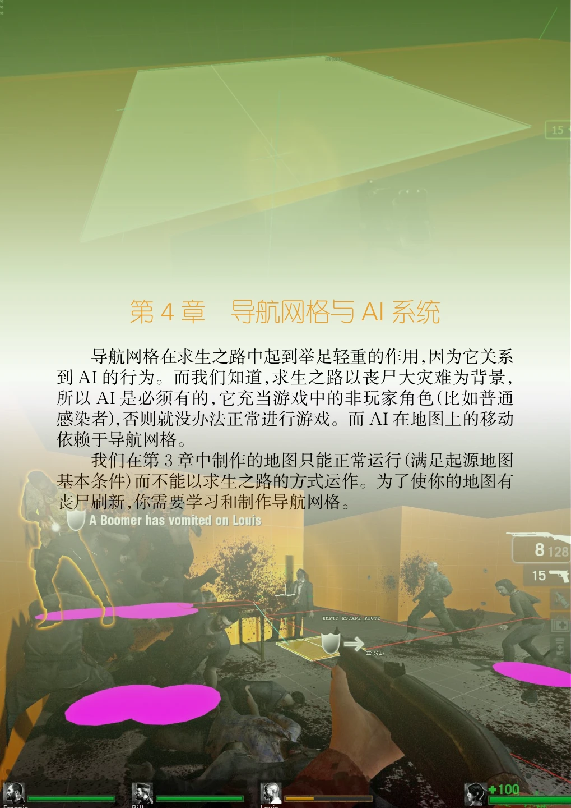
导航网格在求生之路中起到举足轻重的作用，因为它关系到AI的行为。而我们知道，求生之路以丧尸大灾难为背景，所以AI是必须有的，它充当游戏中的非玩家角色（比如普通感染者），否则就没办法正常进行游戏。而AI在地图上的移动依赖于导航网格。
我们在第3章中制作的地图只能正常运行（满足起源地图基本条件）而不能以求生之路的方式运作。为了使你的地图有丧尸刷新，你需要学习和制作导航网格。
4.1 导航网格#
4.1.1 导航网格#

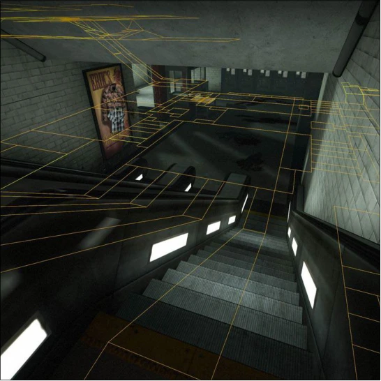
导航网格（Navigation Mesh，Nav Mesh）是一种数据结构，用于存储用于路径查找的数据，通常由机器人使用。在起源引擎中，一个导航网格是一个四边形，并且可以根据地势起伏贴合到地面上，导航网格之间可以互相连接。导航网格覆盖的区域通常说明了这个区域是可行走区域，并且机器人只会在可行走区域里移动。
如果没有任意导航网格覆盖，那么机器人将不能正确地移动，在求生之路中主要表现为生还者AI不会移动、感染者无法生成。
即使你手动生成了任意感染者，普通感染者和Witch也不会移动，其他的特殊感染者能移动但无法正确地执行避障操作，只会沿直线向生还者移动，无视障碍物，导致被障碍物卡住而无法移动。只有在可行走区域内，导演才会生成感染者，机器人才能正常工作。
导航网格系统主要被反恐精英系列中的人质和机器人、NextBot实体使用，以便让机器人了解其环境中可导航的内容，以及通往所需目的地的路径。
在起源引擎中，导航网格被游戏存储为一个.nav文件。每一个导航网格文件对应一个地图。例如，如果你在map1.bsp上创建了导航网格并且保存，那么游戏将在<游戏目录>\maps中（一般与地图文件处于同一个文件夹）生成一个map1.nav文件。
导航网格体编辑在游戏中完成。可以使用nav_generate生成（新的）.nav文件（需要启用sv_cheats 1和nav_edit 1）。
在官方起源引擎游戏中，拥有导航网格系统的游戏之间的导航网格系统版本是不一样的。Garry's Mod同时支持导航网格和导航节点。
导航节点是地图的一个特殊组件，旨在帮助实时NPC导航。导航节点由手动放置的「节点」和自动生成的链接组成。当地图加载到允许NPC存在的游戏中时，它们会自动创建。导航节点要比导航网格先出现，由半衰期系列游戏使用。一般的起源引擎游戏中使用导航节点来导航机器人。
如果你是一名半衰期地图作者，你应该对导航节点非常熟悉。
但导航网格与导航节点相反，它只能在游戏中编辑，并且在Hammer编辑器中无法对导航网格进行编辑，除了一些实体允许你在一定程度上编辑它们。这些实体可以影响导航网格的属性。
4.1.2 特定游戏的子版本#
| 游戏 | 导航网格类（Nav Mesh Class） | 子版本 | 备注 |
|---|---|---|---|
| 起源引擎 Garry's Mod | TheNavMesh | 0 | Garry's Mod使用基础导航网格（与Valve游戏不同，它不使用自己的来实现） |
| 反恐精英：起源 反恐精英：全球攻势 | CSNavMesh | 1 | *将进近区域数据附加到每个区域。 |
| 军团要塞2 | CTFNavMesh | 2 | 将TF2特定的属性标志附加到区域数据。 |
| 求生之路 | TerrorNavMesh | 13 | |
| 求生之路2 | TerrorNavMesh | 14 |
习题9#
- 一、选择题（9道）
- 1.导航网格的主要用途是什么？ A. 存储游戏地图的纹理信息 B. 帮助机器人进行路径查找 C. 渲染地图的3D效果 D. 用于计算游戏中的光照
- 2.在起源引擎中，导航网格是由什么组成的？ A. 三角形 B. 六边形 C. 四边形 D. 圆形
- 3.如果地图中没有导航网格覆盖，机器人将会如何表现？ A. 正常移动 B. 停止移动或无法移动 C. 生成更多的敌人 D. 无法执行任何动作
- 4.以下哪种感染者不会移动，除非地图有导航网格？ A. Tank B. Witch C. Boomer D. Hunter
- 5.在起源引擎中，导航网格文件的扩展名是什么？ A. .bsp B. .nav C. .txt D. .mdl
- 6.如何在游戏中生成新的导航网格？ A. 使用Hammer工具 B. 使用nav_generate命令 C. 手动编辑.bsp文件 D. 使用游戏菜单选项
- 7.在起源引擎中，导航网格与导航节点的主要区别是什么？ A. 导航网格可以在Hammer中编辑 B. 导航节点比导航网格更复杂 C. 导航网格只能在游戏中编辑 D. 导航节点只能用于玩家导航
- 8.以下哪一个是存储导航网格文件的标准位置？ A. 游戏安装目录下的scripts文件夹 B. 游戏安装目录下的maps文件夹 C. 游戏安装目录下的materials文件夹 D. 游戏安装目录下的sounds文件夹
- 9.导航网格的哪项特性能够帮助机器人在有障碍物的环境中移动？ A. 自动生成的链接 B. 纹理属性 C. 实体的碰撞盒 D. 游戏脚本控制
- 二、填空题（5道）
- 10.导航网格的主要作用是帮助______进行路径查找，确保其能够正确导航。
- 11.在起源引擎中，导航网格文件的扩展名是______，它与地图文件一同存储在maps文件夹中。
- 12.通过在游戏中启用______和______命令，可以生成新的导航网格文件。
- 13.导航网格与导航节点不同，导航网格只能在______中进行编辑，而不能在Hammer编辑器中编辑。
- 14.在求生之路游戏中，______实体可以影响导航网格的属性，从而改变机器人或感染者的行为。
- 三、简答题与论述题（5道）
- 15.解释什么是导航网格，并简述它在游戏中的主要作用和用途。
- 16.为什么在求生之路中，如果没有导航网格，AI生还者和感染者无法正常移动？请结合实例说明导航网格的作用。
- 17.请说明如何在求生之路游戏中生成和编辑导航网格，包括所需的命令和工具。
- 18.讨论导航网格对游戏性能的影响。为什么合理设置导航网格对于大地图尤为重要？
4.2 导航网格的编辑#
接下来我们将为地图创建导航网格。
首先，在游戏中打开需要制作导航网格的已编译地图。教程中使用上一章制作的地图（tutorial01. vmf）作为示例（编译后是tutorial01.bsp）。请按照第 42 页上的「运行关卡」 中的步骤编译地图。
在游戏中手动加载地图的命令是map <地图名>（不包含文件后缀名，即map tutorial01）。在控制台键入这个命令后，游戏将开始载入地图。进入到地图时，可能会弹出「Map is Unplayable!」提示框（因为没有任意导航网格存在）。点击「继续」（或「Continue」）即可关闭。
4.2.1 准备开始#
转到游戏开发者控制台，键入以下命令：
- 1.director_stop（停用导演）
- 2.nav_edit 1［启用导航网格编辑器（Navigation Meshes Editor）］
- 3.nb_delete_all（踢掉当前游戏对话中的所有机器人）（如果不踢掉，在导航区域生成过程NPC也会全部被踢掉）
然后关闭控制台，返回游戏。
4.2.2 导航区域的生成#
接着，把准星对着两个房间之间的走廊的中心，然后打开控制台并输入nav_mark_walkable。

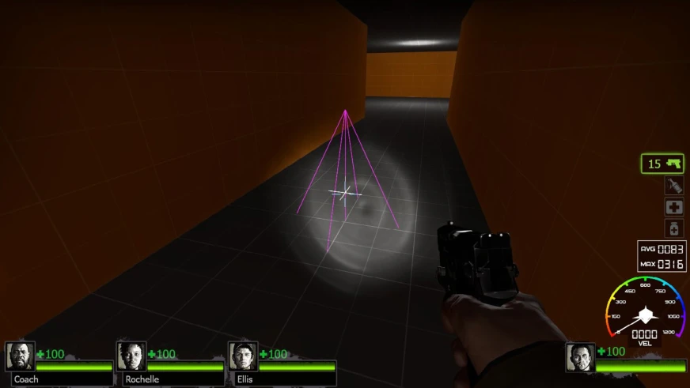

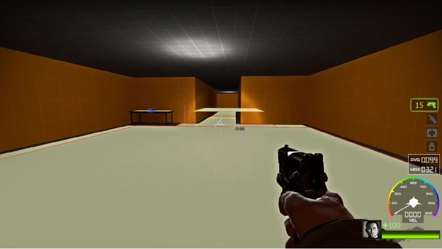
这将创建一个可行走区域标记，即看起来像金字塔一样的图形。
创建后，在控制台输入nav_generate_incremental。这将在这个可行走区域标记周围生成一组导航区域（Navigation Area）。导航区域显示为一系列连接的方块。
4.2.3 导航区域的选择与删除#
每次通过运行nav_generate_incremental命令来生成导航区域时，新创建的导航区域总是会处于选中状态，或者说被添加到选定集（Selection Set）a。
通过命令nav_clear_selected_set可以清空选定集，即取消选择所有的导航区域。通过命令nav_toggle_in_selected_set，你可以切换你的准星下的十字光标所对的导航区域的选择状态，即对一个未选中的导航区域使用此命令时，这个导航区域就会被选中，反之则取消选中。
若要删除导航区域或一组导航区域，请把十字光标指向要删除的导航区域，或把要删除的导航区域添加到选定集，然后执行命令nav_delete。当选定集为空时，此命令将删除十字光标指向的导航区域，否则将删除选定集里的导航区域。
4.2.4 绑定快捷键#
你会发现，进行导航区域编辑需要输入大量的控制台命令，很麻烦。因此我们可以把它们绑定到特定的按键上，比如把nav_toggle_in_selected绑定到Z键上，那么只需要通过按下Z键就可以轻松选择导航区域，而不必每次都得打开控制台输入命令。
Valve提供了一套快捷键绑定方案。其文件名为nav_mode.cfg。Valve还提供了一套用于游戏的配置方案，方便你在游戏按键和导航编辑模式按键下切换，名为game_mode.cfg。
这两份文件可以在Valve开发者社区b上找到：
https://developer.valvesoftware.com/wiki/Nav_mode.cfg_(L4D)
或者你可以从本书附录中获取（参见第 194 页上的「适用于求生之路2的导航网格编辑模式配置文件」）。
要配置这两份文件，你需要在...\steamapps\common\left 4 dead 2\left4dead2\cfg\目录下新建两个文本文档文件（.txt），然后分别把这两个文件重命名为「nav_mode.cfg」和「game_mode.cfg」。完成重命名后，它们应该是以.cfg为后缀的文件。用文本编辑器（比如Windows系统自带的记事本）打开这两个文件，点击上面的链接，从中找到对应的内容并复制到对应的文件，然后保存。
此时你已经有了2个能用的文件——nav_mode.cfg和game_mode.cfg，并且都位于cfg目录下（steamapps\common\left 4 dead 2\left4dead2\cfg\）。
返回到游戏，并在控制台输入：
exec nav_mode此时你的按键设置已经是专门用于导航区域编辑的了。现在，你可以通过按键盘上的PageDown键（一般位于方向键的上方）在导航区域编辑模式和游戏模式切换。下表将告诉你在使用nav_mode.cfg时更改的按键对应的功能是什么：
| 按键 | 控制台命令/变量 | 描述 |
|---|---|---|
| Tab | nav_save | 保存导航网格。 |
| N | noclip | 在穿墙模式切换。 |
| F3 | aliases director_stop_toggle and director_start_toggle | 切换导演的工作状态。 |
| 续表 | ||
| 按键 | 控制台命令/变量 | 描述 |
| ] | mat_wireframe 0 2 1 | 让环境以线框显示。用于性能调试。 |
| \ | vcollide_wireframe 0 1 1 | 以线框显示物理碰撞模型。 |
| . （不是数字键盘上的） | z_debug 0 2 -1 | 切换z_debug。 |
| L | nav_mark | 将「区域」或「阶梯」标记在光标下，以便通过后续编辑命令进行操作。 |
| Z | nav_toggle_in_selected_set | 把十字光标指向的导航区域从选定集中添加或移除。 |
| G | nav_clear_selected_set和 nav_move_mode_off | 清空选定集。关闭一系列允许移动导航区域的设置。 |
| H | nav_flood_select | 以递归方式选择当前区域和与其连接的所有区域。若要清除所选内容，请再次使用此命令。 |
| I | nav_place_floodfill | 请参阅4.4 导航网格控制台命令一览表 。 |
| B | nav_generate_incremental | 请参阅4.4 导航网格控制台命令一览表 。 |
| M | nav_mark_walkable | 请参阅4.4 导航网格控制台命令一览表 。 |
| V | nav_generate_incremental_range 512 2048 512 | 更改此控制台变量数值。 请参阅4.4导航网格控制台命令一览表。 |
| INS（数字键盘） | warp_far_survivor_here | 把离得最远的生还者AI传送到准星位置。 |
| DEL（数字键盘） | alias respawn_bot | 在玩家附近重生生还者AI。 |
| 'a | warp_all_survivors_here | 把所有的生还者都传送到准星处。 |
| 1 | z_spawn | 生成一个普通感染者。 |
| 2 | nb_delete_all | 踢掉所有NPC。 |
| 3 | nb_move_to_cursor | 让所有NextBot机器人向十字光标移动。 |
| Q | nb_delete_all infected | 踢掉所有存在的被感染者。 |
| /（数字键盘） | nb_delete_all infected | 同上。 |
| F8 | nb_move_to_cursor | 让所有NextBot机器人向十字光标移动。 |
| PGUP（数字键盘） | z_spawn tank | 生成一只Tank。 |
| 鼠标左键 | nav_begin_area | 请参阅4.4 导航网格控制台命令一览表 。 |
| 鼠标右键 | nav_end_area | 请参阅4.4 导航网格控制台命令一览表 。 |
| Insert | nav_split | 请参阅4.4 导航网格控制台命令一览表 。 |
| C | nav_split | 请参阅4.4 导航网格控制台命令一览表 。 |
| Delete | nav_delete | 请参阅4.4 导航网格控制台命令一览表 。 |
| Home | nav_disconnect | 请参阅4.4 导航网格控制台命令一览表 。 |
| 鼠标中键 | mark和nav_connect | 请参阅4.4 导航网格控制台命令一览表。 |
| 鼠标按键5 | nav_disconnect | 请参阅4.4 导航网格控制台命令一览表。 |
| O | nav_splice | 请参阅4.4 导航网格控制台命令一览表 。 |
| ENTER（数字键盘） | nav_merge | 请参阅4.4 导航网格控制台命令一览表 。 |
| P | nav_build_ladder | 请参阅4.4 导航网格控制台命令一览表 。 |
| F6 | nav_gui | 请参阅4.4 导航网格控制台命令一览表 。 |
| F7 | nav_simplify_selected | 请参阅4.4 导航网格控制台命令一览表 。 |
| F9 | nav_snap_to_grid 0 2 1 | 请参阅4.4 导航网格控制台命令一览表 。 |
| F12 | nav_flood_select和 nav_toggle_selected_set | 请参阅4.4 导航网格控制台命令一览表 。 |
| PageUp（PGUP） | nav_trouble_report | 请参阅4.4 导航网格控制台命令一览表 。 |
| 续表 | ||
| 按键 | 控制台命令/变量 | 描述 |
| U | mark OBSCURED | 标记对应的生成属性（OBSCURED）。有关导航区域属性的描述，请参阅4.6 导航网格属性列表。 |
| Y | mark BATTLEFIELD | 同上。 |
| 4 | mark BATTLESTATION | 同上。 |
| 5 | mark PLAYER_START | 同上。 |
| 6 | mark CHECKPOINT | 同上。 |
| 7 | mark FINALE | 同上。 |
| 8 | mark NO_MOBS | 同上。 |
| 9 | mark EMPTY | 同上。 |
| +（数字键盘） | nav_corner_raise | 请参阅4.4 导航网格控制台命令一览表 。 |
| -（数字键盘） | nav_corner_lower | 请参阅4.4 导航网格控制台命令一览表 。 |
| F1 | nav_corner_place_on_ground 5 | 请参阅4.4 导航网格控制台命令一览表 。 |
| F2 | nav_corner_place_on_ground | 请参阅4.4 导航网格控制台命令一览表 。 |
| 5（数字键盘） | 由多个命令组成，详情请参阅原文。 | 允许使用鼠标滚轮垂直移动选定的导航区域。 |
你也可以自己绑定按键，通过这个命令：
bind 按键 "按键对应的命令"例如，绑定Z键到nav_toggle_in_selected_set的命令为bind Z nav_toggle_in_selected_set。
如果绑定的命令包括空格，请在要绑定的命令前后使用双引号，例如bind ; "z_spawn tank"。这代表当你按下「；」键时就会生成一个Tank。
你可以对nav_mode.cfg进行更改，以便添加新的按键或更改按键。从现在开始，本书将假设你使用默认的nav_mode.cfg。如果你使用自己的绑定键，你必须用你自己的绑定键替换原来给定的键。
4.2.5 拆分导航区域#
你可能想把一个大的导航区域拆成多个小的导航区域。通过命令nav_split我们可以把一个导航区域切割成多个。在nav_mode.cfg中，该命令默认绑定到Insert键。
在游戏中，对准你想要切割的导航区域。你应该能够注意到在导航区域上有一条白线存在。这条白线就是导航区域在切割后形成的两个导航区域之间的分界线，也就是「切割预览」。定位你的光标，使得这个线条绘制在你创建的第一个房间中的有武器的桌子的右侧。（如图 4-2-2 所示）

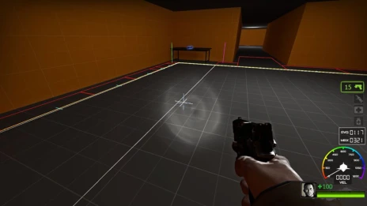

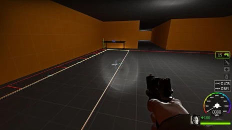
找到这个位置后，按下Insert键（或在控制台输入nav_split）执行切割。你应该能听到一声刀响，表明切割成功。在切割执行后，整个大的导航区域变成了2个小的，并且相互连接（浅蓝色线条）。
接下来，把刚切割导航区域中的较小的那个导航区域切割成一半（切割预览线与这个导航区域的边界上较短的一边平行），如图 4-2-3 所示。

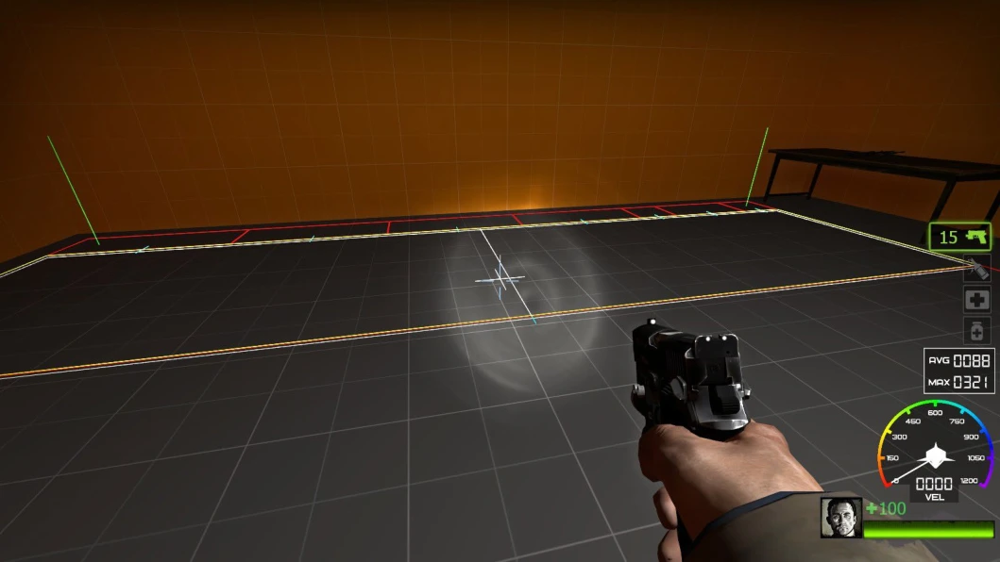
然后，在这两个新的导航区域中选择那个靠近桌子的导航区域。
4.2.6 添加属性#
导航区域可以包含指定特定目的导航属性（Navigation Attributes）。例如，标记有属性「EMPTY」的导航区域意味着游荡、休息的普通感染者不能在其区域上生成。比方说，你的厨房里有一个柜台，当玩家到那里时，你不想要感染者站在柜台上，因为这样看起来很奇怪。你可以将此区域标记为「EMPTY」。
如果你是通过执行excu nav_mode（前提是已经配置好nav_mode.cfg和game_mode.cfg文件）来进入导航区域编辑模式的，默认情况下z_debug已经设置为1。如果还没有，请手动在控制台输入z_debug 1。这个命令允许你查看导航区域的生成属性（Spawn Attributes），以及查看各种感染者的位置、信息等。EMPTY就是生成属性之一。
在我们刚才选中的那个导航区域中，保持选中并打开控制台输入mark PLAYER_STARTa。若选定集非空，则这个命令（mark）将会把选定集中的导航区域中全部标记上命令中指定的导航区域属性，否则将标记光标指向的导航区域。
执行命令后，你可以看到被影响的导航区域现在以紫色显示，同时上面有一串字符，即「PLAYER_START」，如图 4-2-4 所示。这个时候就说明它已经被PLAYER_START生成属性标记了。这个属性顾名思义，就是玩家开始游戏的地方。
求生之路需要有特定的导航区域在它的地图里面才能使导演系统能够正常工作。对于这个简单的测试地图，我们将使用另一个称为「FINALE」的生成属性。

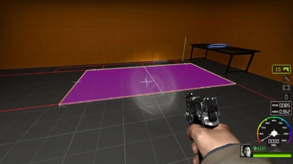

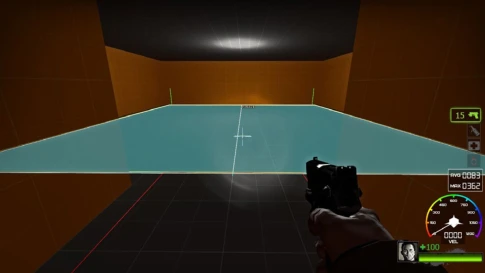
移步到另一个房间，并把这个房间的最大的导航区域标记上FINALE属性。你可以直接把光标指向这个导航区域，并在控制台直接输入mark FINALE或按下数字7来标记，或者先选中然后在控制台输入命令或按下数字7。被FINALE属性标记的区域以蓝色显示，如图 4-2-4 所示。被这个属性标记的导航区域代表地图的终点区域。
现在，我们这个地图的导航网格已经满足了导演正常工作的要求，已经可以构建导航路线（Nav Flow）了，即导演可以创建一条从起点到终点的路线。
你也可以在起点区域附近添加一些EMPTY生成属性，以便生还者刚生成时不会被感染者围住，使地图更具可玩性。但是该属性无法杜绝感染者生成，只能阻止游荡的感染者生成。如果你需要，可以给导航区域同时标记上EMPTY和NO_MOBS生成属性。这将阻止任意感染者在被这2个属性标记的区域上生成。
现在，我们给起点区域附近的导航区域标记EMPTY属性（按下数字9或者执行mark EMPTY命令），然后按下Tab键或在控制台执行nav_save命令来保存地图的导航网格。
4.2.7 导航区域的连接#
你可能会注意到，桌子上的导航区域没有与地上的导航区域有浅蓝色的线条相连。你可以发现，当你指向一个导航区域时，所有与这个导航区域相连的导航区域都会显示。所以当我们把十字光标指向桌子上的导航区域时，只能看到桌子上的导航区域而看不到地面的导航区域。这意味着桌子上的导航区域与地面上的导航区域是没有任何连接的。
接下来我们把桌子上的导航区域与地面上的导航区域连接起来。
选中地面上靠近桌子的导航区域，然后也选中桌子上与已经选中的导航区域相邻的导航区域。然后，按下按键End或执行命令nav_connect。
这将创建一个双向连接，双向连接在游戏中用一条浅蓝色的线条表示，如图 4-2-5 所示。双向连接告诉机器人可以从这边的导航区域到那边的导航区域，也可以从那边的到这边的。
有双向连接，那就肯定有单向连接。单向连接是只能从一边到另一边，而不能反着来，以深蓝色线条显示。要建立单向连接，请先选中一个导航区域，之后把光标移到你想要建立单向连接的另一个导航区域，然后按下End键或者执行命令nav_connect，如图 4-2-6 所示。
你可以发现，在双向连接的两个导航区域中，无论指向哪一个导航区域都会显示另一个导航区域，而在单向连接的两个导航区域中，只有能去到另一个导航区域的导航区域会显示与之单向连接的导航区域，而另一个则不会显示。这也表明了它们之间的关系。

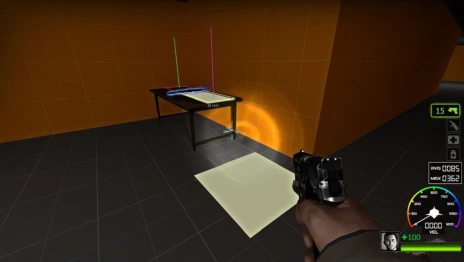

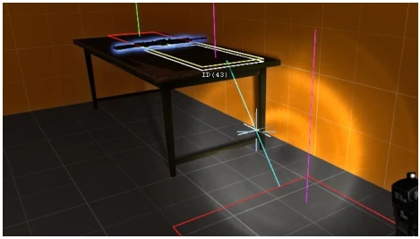


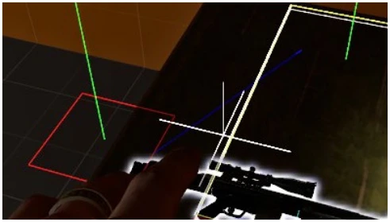
接下来，我们把桌子上的导航区域和其他与其相邻的导航区域都建立双向连接。
完成后，保存导航网格。
4.2.8 分析导航网格#
现在我们有一个基本的导航网格，但是不经过游戏分析的导航网格是不完整的。所以我们需要游戏去分析导航网格，经过导航分析后的导航网格才是能够正常工作的。
在控制台中执行nav_analyze，并返回游戏。如果地图足够大，导航分析将需要一些时间才能完成，并可能会占用大量的CPU时间。期间游戏帧率可能会显著下降，这是正常现象。在导航分析完成后，游戏将自动重载地图。
在分析完成并重载地图后，人工智能导演系统默认情况下是禁用的。如果你需要测试地图，则可以在控制台执行「director_start」命令来启用导演。游戏将正常开始刷新被感染者；或者你可以直接按下PageDown键，进入游戏模式（game_mode.cfg），如果你是在使用nav_mode.cfg来编辑导航网格。然后你可以根据需要重载地图（使用map或changelevel命令）。
你可以执行director_force_panic_event命令来让导演强行刷一波尸潮。
4.2.9 为梯子创建导航网格#

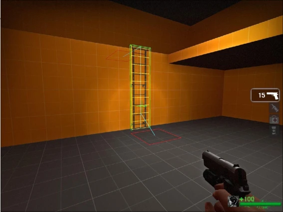
梯子也需要导航网格，否则AI将无法识别和使用梯子。
打开我们在第 56 页上的「3.7 可见性（一）」中所创建的tutorial03.vmf，编译进入游戏。按照创建导航网格的一般步骤，为地图创建导航网格。
当你把准星对准梯子时，你会发现十字光标会变成绿色。此时按下P键或者执行nav_build_ladder命令，即可为梯子创建导航网格。通常情况下，梯子上的导航网格会自动连接到附近的导航区域。
4.2.10 手动创建导航区域#
有些时候，你想要在一些比较特殊的地方创建导航区域，而这些地方无法自动生成导航区域。那么，你需要手动绘制导航区域。
在导航网格编辑器下，通过分别执行命令nav_begin_area和nav_end_area来确定一个导航区域。
执行下列操作之一：
- •将光标移动到想要创建的导航区域的一个角。
- •执行命令nav_begin_area后，返回游戏并移动鼠标时，你能够看到自己绘制的导航区域。
- •移动光标，在确定要创建的导航区域后，打开控制台然后执行命令nav_end_area。
在nav_mode.cfg中，这两个命令默认绑定到鼠标左键和鼠标右键。左键开始创建一个导航区域，右击则确定创建导航区域。
请注意，手动创建的导航区域不会自动连接到其他导航区域。请手动使用nav_connect命令进行连接。如果你不小心按下鼠标左键（即执行了nav_begin_area）而开始了手动创建导航区域，只需要再按下鼠标左键（再执行一次nav_begin_area）即可取消创建。
通常情况下，你的十字光标是不会对齐到网格的。通过执行命令nav_snap_to_gird 1可以强制十字光标对齐到网格上。在nav_mode.cfg中，通过按F9可以决定十字光标是否对齐到网格。这将在你按下绑定键时更改网格大小，并在每次按F9键时继续切换大小。
4.2.11 高级导航网格编辑#

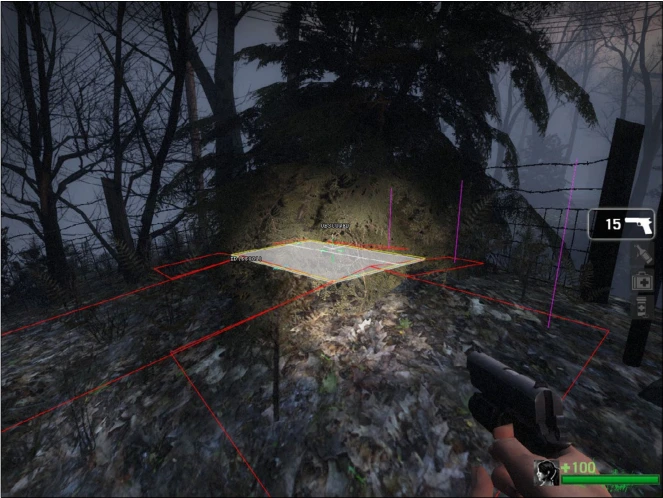
- 1.使用Obscured属性
应用了OBSCURED属性的导航区域允许感染者出生在这些区域，即使幸存者可以看到它。这主要用于被遮蔽的地方，如树林内部。在对抗地图中，特别有助于让玩家感染者出生在更多的地方。
同时也可以防止电脑幸存者透过浓密树丛发现到感染者。
要使用OBSCURED属性，请选择导航区域并在控制台中执行「mark OBSCURED」。
- 2.


当你手动绘制导航区域时，你会注意到这些导航区域是完全平坦的，即时它们是在不平坦的表面上进行绘制。
通过选中这些导航区域并执行命令「nav_corner_place_on_the_ground」（或按下F2）可以使选定集中的导航区域都贴合到地面上。通过对导航区域进行分割，划分出更多小的导航区域，并把它们贴合到地面上，可以让导航区域更准确地贴合到地面上。
- 3.


你可以使用nav_splice自动为你绘制一个导航区域，而不是在两个现有区域（宽度或长度相同）之间手动绘制导航区域。
要执行这个命令，请先选中一个导航区域，然后把光标指向另一个导航区域，之后执行该命令（或按下O）。此时会有一个新的导航区域生成在这两个导航区域之间。

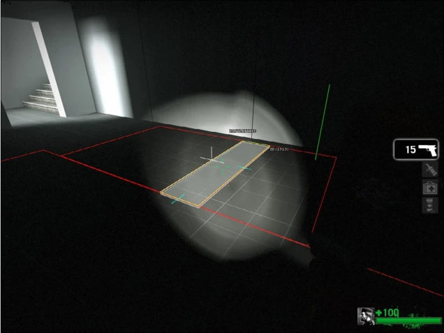

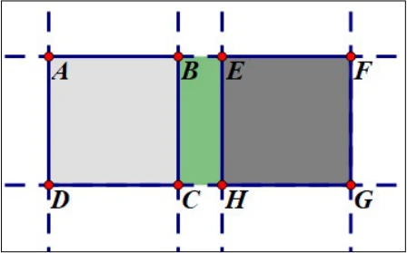
如图 4-2-14 所示，一般地，在俯视图上看，对于任意两个导航区域aABCD、EFGH，须满足A、B、E、F和D、C、H、G四点分别共线，才可执行命令nav_splice，并创建连接这两个导航区域的导航区域BEHC。
新创建的导航区域只会与用于创建该导航区域的两个导航区域相连接，请自行把新导航区域与其他导航区域连接。
- 4.合并导航区域
导航网格随着区域的增多而使文件大小越来越大。如果你发现导航网格文件太大，并且可以通过将某些区域合并在一起来优化，那么可以使用「nav_merge」来合并两个相同宽度或长度的相邻导航区域。
该命令默认绑定到数字键盘上的Enter键。
要进行合并，请先选中一个导航区域，然后把光标指向另一个相邻的导航区域，然后执行该命令或按下数字键盘上的Enter键。请注意，它们必须是相邻的并且它们的长度或者宽度相等。具体来说：

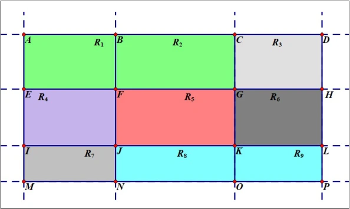
如图 4-2-15 ，存在9个矩形R1，R2，R3，R4，R5，R6，R7，R8，R9，分别表示9个导航区域。其中，共边的两个导航区域可以合并为一个。随着不断的合并，最终会只剩下导航区域ADPM。也就是要满足以下条件：
- 1.共面性：两区域须位于同一水平平面，且各自表面平整无凹凸。
- 2.相邻性：两区域共享一条完整的边（如边BF），且该边完全重合。
- 3.方向对齐性：
- •在共享边的延伸方向上，两区域的对应顶点共线（如A-B-C共线，E-F-G共线）。
- •垂直于共享边的两侧边须平行且长度相等（如AE∥CG且AE=CG）。
- •
- 4.矩形完整性：合并后的区域须为单一矩形，无重叠或间隙。
或者：
两个导航区域R1=ABFE与R2=BCGF的可合并条件为：
- 1.共面性：存在平面
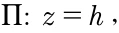
，使得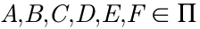
。 - 2.相邻性：边
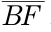
是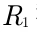
和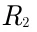
的公共边，即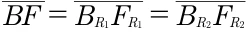
- 3.方向对齐性：
- •沿共享边方向，存在线性关系：
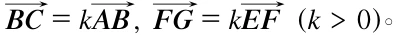
。 - •垂直于共享边的边满足：
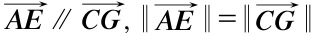
。
- •
- 4.闭合性：合并后区域为矩形ACGE，满足：
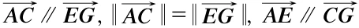
。

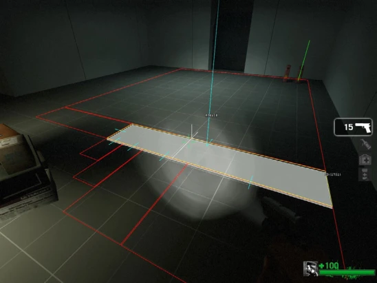

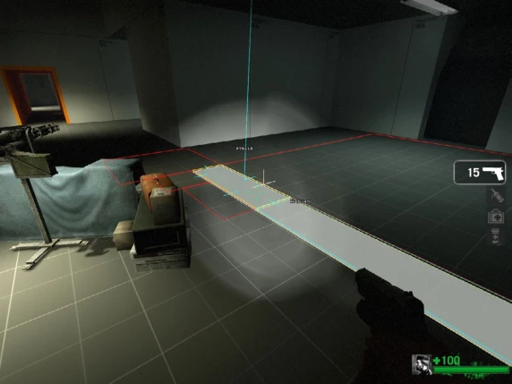

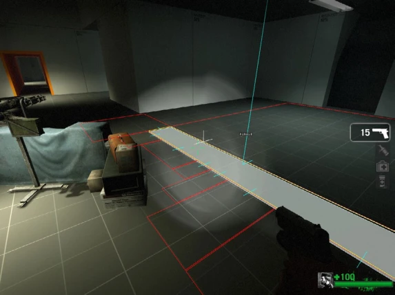
有时候，有一些薄的笔刷或道具，导航系统很难在其上方生成或绘制导航区域。在这种情况下，你可以将导航区域绘制得稍低或稍高些，并在以后手动匹配。
命令「nav_corner_raise」或「nav_corner_lower」可用于调整所选导航区域的高度。
数字键盘上的+和-键可用于升高和降低导航。

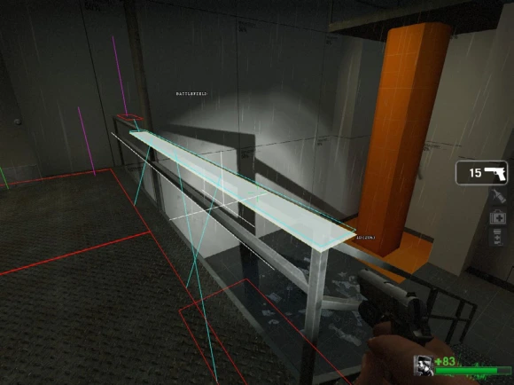

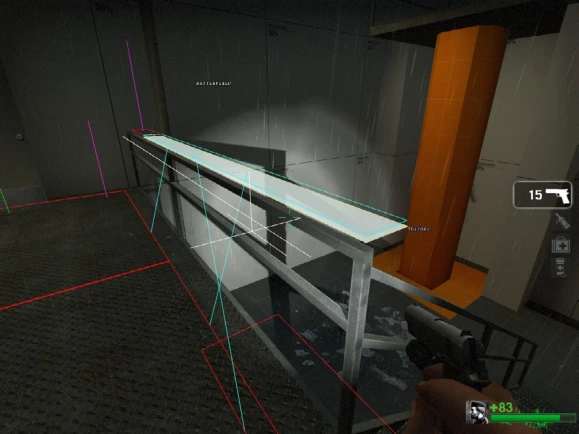
nav_edit.cfg还包含一些特殊的绑定，可以使用鼠标滚轮垂直移动导航区域。
- •按数字键盘上的5（中心）键。
- •使用鼠标滚轮升高和降低导航区域。
- •再次按数字小键盘上的5（中心）键离开此模式。
- 6.发现导航网格的问题所在
在导航网格中可能会存在几个错误。这些错误可能会导致AI被卡住或不能正常行动。
这些情况可以通过控制台中的「nav_trouble_report」命令轻松找到。这将会选择有问题区域。你可以在穿墙（noclip）模式中放大地图来查看它们。
运行nav_trouble_report执行以下测试：
| 测试名称 | 命令 | 描述 |
|---|---|---|
| Orphan check | orphan | 没有连接到导航网格的其余部分的导航区域 |
| Missing Battlefield check | battlefield | 某些导航区域在BATTLEFIELD内缺少BATTLEFIELD属性 |
| Missing Finale check | finale | 某些导航区域在FINALE中缺少FINALE属性 |
| Missing Checkpoint check | checkpoint | 某些导航区域在CHECKPOINT中缺少CHECKPOINT属性 |
| Overlap check | overlapping_areas | 多个导航区域占据相同的空间 |
| Corner-to-corner connection check | corner-to-corner | 导航区域正在角落处连接 |
| Climb links from stairs check | climb_up_from_stairs | 导航区域在楼梯两旁有打开与关闭的双向连接 |
| Connection to overlapping area check | connection_to_overlapping_areas | 导航区域之间的连接存在重叠 |
| Long horizontal connection check | long_horizontal_connections | 导航区域之间的连接太长 |
| Double connections check | multiple_connections | 导航区域被多次连接 |
| Floating/interpenetrating world check | floating_or_interpenetrating_areas | 导航区域太高或太低 |
| Areas with non-walkable connections check | non-walkable_connections | 导航是说你能从某一区域走到下一区域，但此时你不能 |
| Disconnected ladder check | ladder_disconnected | 梯子没有连接到任何导航区域 |
| Overlapping ladder check | ladder_overlapping | 两个或更多梯子在彼此的顶部 |
| Non-climbable ladder check | ladder_not_climbable | 不能攀爬梯子（可能被道具或者笔刷阻挡了） |
你还可以使用个别参数运行nav_trouble_report <test_name>以便在每个类别中都找到错误。例如：
nav_trouble_report finale
nav_trouble_report orphan习题10#
- 一、选择题
- 1.在游戏中，如何手动加载地图？ A. load <地图名> B. map <地图名> C. run <地图名> D. start <地图名>
- 2.使用哪个命令可以停用导演？ A. director_stop B. director_disable C. director_end D. director_stop_all
- 3.哪个命令用于生成可行走区域标记？ A. nav_generate B. nav_mark_walkable C. nav_create_area D. nav_add_walkable
- 4.在导航区域生成过程中，如何清空选定集？ A. nav_clear_selection B. nav_remove_selected C. nav_clear_selected_set D. nav_reset_selection
- 5.哪个命令用于删除选定集中的导航区域？ A. nav_remove B. nav_delete_selected C. nav_delete D. nav_kill_selected
- 6.如何为特定的按键绑定命令？ A. bind 按键 "命令" B. assign 按键 "命令" C. keybind 按键 "命令" D. command_bind 按键 "命令"
- 7.哪个命令会将生成属性标记为「PLAYER_START」？ A. mark PLAYER_START B. set PLAYER_START C. label PLAYER_START D. nav_mark PLAYER_START
- 8.切割导航区域的命令是什么？ A. nav_split_area B. nav_cut C. nav_split D. nav_divide
- 9.要建立双向连接的命令是哪个？ A. nav_link B. nav_connect C. nav_join D. nav_merge
- 10.哪个命令用于保存导航网格？ A. nav_store B. nav_save C. nav_keep D. nav_archive
- 二、填空题
- 11.在游戏中打开需要制作导航网格的已编译地图时，输入的命令是 __________。
- 12.导航区域标记后，输入 nav_generate_incremental 命令将在可行走区域周围生成一组 _________。
- 13.为了防止感染者在某个区域生成，我们可以将该区域标记为 _________。
- 14.要标记一个导航区域为终点区域，我们需要使用命令 mark __________。
- 15.如果想要切割一个大的导航区域为多个小区域，可以使用命令 _________。
- 三、简答题
- 16.请简述如何启用导航网格编辑器并删除当前游戏中的所有机器人。
- 17.在创建导航区域时，如果需要标记多个区域，该如何操作？
- 四、论述题
- 18.请详细描述如何连接两个导航区域，并解释双向连接与单向连接的区别。
- 19.在导航区域编辑中，如何检查导航网格的生成属性并进行标记？
- 20.请阐述如何为梯子创建导航网格并确保其正确使用。
4.3 导航路线#
在导航分析时，导演尝试将起始区域连接到 CHECKPOINT 属性或 FINALE 属性。如果成功，这将建立导航路线（Navigation Flow）。
导航路线由起始区域（战役出生点或起始安全室）和终点区域（终点安全室或救援点）确定。生成属性PLAYER_START（战役起点）、CHECKPOINT（安全室）、FINALE（救援点）将直接影响导航路线的确定。
导航路线确定后，生成属性ESCAPE_ROUTE将会自动标记在部分导航区域上。ESCAPE_ROUTE意为「逃生路径」，即生还者可以沿着被该生成属性标记的导航区域抵达终点。
路线用数字表示从起点到终点的距离。路线值让AI系统快速确定当玩家靠近安全室时谁在「前面」或「后面」，等等。通过设置属性：PLAYER_START、CHECKPOINT和FINALE来确定路线。
要立即查看整个导航网格的路线（不要与路线值混淆），请输入以下命令：
- 1z_debug 1
- 2z_show_flow_delta 2
对于z_show_flow_delta，「1」会显示你指向的区域的路线，「2」则显示整个活动区域的路线。

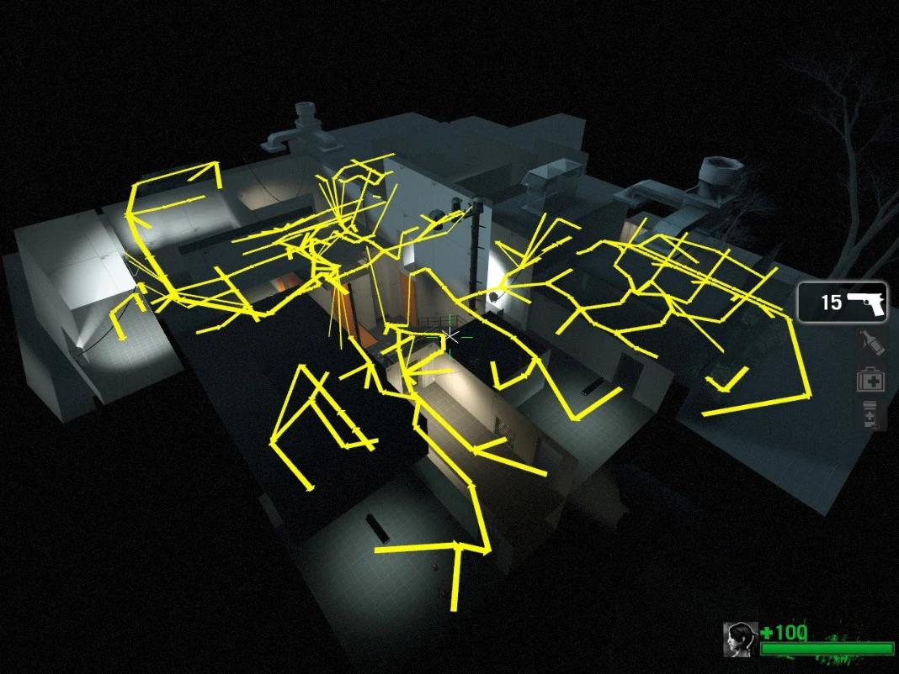
还可以输入z_show_flow_distance 1来查看指向的导航区域的路线值：

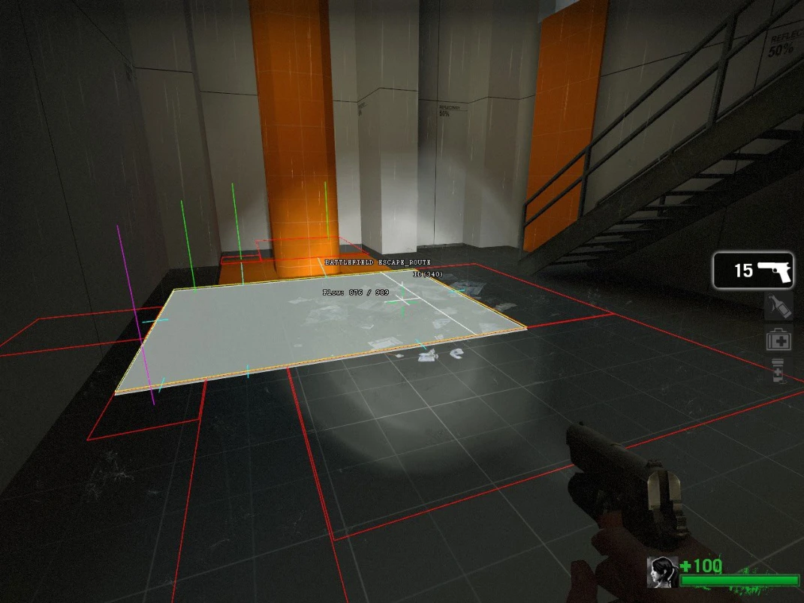
问题来了：查看这些有什么用呢？
导航路线的成功建立需要保证从起点到终点之间的线路没有中断。中断可以由多种原因引起，简单来说就是一个机器人从起点或终点出发通过现有的导航网格进行导航，但无法抵达另一端。
导航路线中断导致机器人无法分析抵达终点的路径，这样就不会有尸潮、Tank或者Witch，而且复活房间会无法正常工作。基本上，游戏会被破坏。
所以上面的工具是用于帮助我们成功地建立导航路线。那么该如何判断路线是否中断呢？
在你的导航网格完成后，首先应该进行导航分析nav_analyze。如果导航分析通过，那么代表你的导航网格已满足游戏的基本要求，导航路线是正常的，可以正常运行。
z_show_flow_delta是将路线可视化，如果设置为2，则显示所有与你所指向的导航区域相关联的所有导航区域组成的一个活动区域集的导航路线，也就不是显示整个导航网格的导航路线。这意味着如果有部分导航区域集与指向的活动区域集没有连接就不会显示它们的导航路线。可视化的路线的箭头也代表路线的方向，如果箭头所指方向不对（不能抵达目的地），也可能是导航路线中断。
常用的方法是使用z_show_flow_distance。它可以直接查看目标导航区域的路线值，显示在该导航区域上方。
4.4 导航网格控制台命令一览表#
在游戏中，我们只能通过控制台命令来对导航网格进行各种操作。所以我们有必要去了解一些有关导航网格的控制台命令。而这些命令可以绑定到快捷键，通过快捷键我们可以快速完成各种操作，极大提高效率，而不必每次都需要打开控制台窗口输入命令。
下面是大部分有关导航网格的控制台命令列表：
4.4.1 网格生成#
| 命令 | 描述 |
|---|---|
| nav_mark_walkable | 将当前位置标记为可行走位置。这些位置在采样地图以生成导航网格时用作种子位置。 |
| nav_clear_walkable_marks | 删除任意以前放置的可行走位置标记。 |
| nav_generate | 为当前地图生成导航网格并将其保存到磁盘。nav_quicksave确定生成的信息量。还生成梯子，并在最后进行nav_analyze。 |
| nav_generate_incremental | 从可行走标记而不是在整个网格上运行生成过程。新创建的区域通常会连接到先前存在的区域。 警告：在求生之路2中，使用它将删除所有JUMP区域b，以及散布在地图周围的一些随机连接。最好仅在导航创建过程开始时使用此命令。 |
| nav_generate_incremental_range <整数> | 在指定范围内生成导航网格（单位可能是Hammer单位）。生成中心由可行走区域标记定义。 |
| nav_auto_build_area | 在编辑光标c周围构建高精度区域并创建它们。 |
| nav_save | 将当前导航网格保存到NAV文件。 |
| nav_load | 从当前地图的NAV文件加载导航网格。 |
| nav_analyze | 分析当前地图的导航网格。nav_quicksave确定生成的信息量。 |
| nav_max_view_distance | 修改生成时用于测试所有导航区域可见性的距离。 默认值（6000）对于开放的大型地图来说效率极低，并且会产生臃肿的文件大小。将其设置为类似2000的值将使生成速度更快，占用的文件大小也更小。 |
4.4.2 选择命令#
| 命令 | 描述 |
|---|---|
| nav_add_to_selected_set | 将当前区域添加到选定集。通常，所选区域是指向的区域。 |
| nav_add_to_selected_set_by_id | 通过区域编号/ID选择导航。这对于控制台中有关UpdateBlocked和可能的流程错误的报告非常有用。 |
| nav_begin_deselecting | 开始持续从选定集中移除。 |
| 续表 | |
| 命令 | 描述 |
| nav_end_deselecting | 停止持续从选定集中移除。 |
| nav_begin_selecting | 开始持续添加到选定集中。 |
| nav_end_selecting | 停止持续添加到选定集中。 |
| nav_begin_drag_deselecting | 开始拖动选择区域。 |
| nav_end_drag_deselecting | 停止拖动选择区域。 |
| nav_begin_drag_selecting | 开始拖动选择区域。 |
| nav_end_drag_selecting | 停止拖动选择区域。 |
| nav_toggle_in_selected_set | 选择游戏中准星指向的导航网格区域。该命令通常绑定到某个键以方便使用。例如，位于L4D配置文件夹中的nav_mode.cfg文件将此命令绑定到Z键。 |
| nav_clear_selected_set | 清除所有已视觉突出显示的选定导航网格区域的选择。换句话说，此命令取消选择已选定的导航网格区域。 |
| nav_flood_select | 选择/突出显示所有连接的导航网格，从游戏中的准星指向的导航网格开始。这并不意味着选择所有导航网格区域。 |
| select_with_attribute | 选择/突出显示所有带有指定属性标记的导航网格区域。 |
4.4.3 编辑命令#
| 命令 | 描述 |
|---|---|
| nav_delete | 删除当前突出显示、标记的导航区域（即选定集中的导航区域）。 |
| nav_delete_marked | 删除当前标记的导航区域（如果有）。 |
| nav_split | 将导航区域分割成两部分。请使用光标对齐分割线并调用分割命令。 |
| nav_subdivide | 划分选定集或十字准心悬停的导航区域。 |
| nav_make_sniper_spots | 将标记导航区域切割成适合狙击点的不相连的子导航区域。 |
| nav_chop_selected | 将所有选定导航区域切成其组成的1×1 区域。 |
| nav_merge | 合并导航区域。要将两个导航区域合并为一个，请选中第一个导航区域，通过将光标指向第二个导航区域来突出显示第二个导航区域，然后调用合并命令。 |
| nav_mark | 标记十字光标下的导航区域或梯子，以便后续编辑命令进行操作。 |
| nav_unmark | 清除标记的导航区域或梯子。 |
| nav_begin_area | 定义新导航区域或梯子的角。要完成创建网格，请将对角拖动到所需位置并发出「nav_end_area」命令。 注意：通过此方法创建的导航区域将双向连接到预先选择的导航区域。 |
| nav_end_area | 定义新导航区域或梯子的第二个角并创建它。 |
| nav_connect | 创建从选择的导航区域到光标指向的导航区域的「单向」连接。要进行双向连接，请同时选中这两个导航区域，并执行命令。 在选定集中a，nav_connect将尝试将第一个选择的导航区域双向连接到每个随后选定的导航区域。 |
| nav_disconnect | 删除标记导航区域和突出显示导航区域之间的连接。 在选定集中，nav_disconnect将尝试断开第一个选定导航区域与每个随后选定导航区域之间的连接。 |
| 续表 | |
| 命令 | 描述 |
| nav_disconnect_outgoing_oneways | 断开高亮显示的导航区域（即选定集）的所有传出的单向连接。 |
| nav_splice | 在标记/选定区域和突出显示/标记区域之间创建一个联合区域。 |
| nav_corner_select | 选择当前标记区域的一角。多次使用以访问所有四个角。 |
| nav_corner_raise | 升高当前标记区域或选定集的选定角。可以输入参数，即升高的高度，单位为Hammer单位。 |
| nav_corner_lower | 降低当前标记区域或选定集的选定角。可以输入参数，即降低的高度，单位为Hammer单位。 |
| nav_corner_place_on_ground | 将选定集、当前标记区域的选定角或标记区域本身放置在地面上。（即让导航区域按地势情况贴合地面） |
| nav_shift <坐标>a | 按指定量移动选定区域。 |
| nav_begin_shift_xy | 开始移动选定集。 |
| nav_end_shift_xy | 完成移动选定集。 |
| nav_simplify_selected | 暂时强制nav_split_place_on_ground为 1，保持nav_coplanar_slope_limit_displacement和nav_coplanar_slope_limit至少为 0.5，并且nav_snap_to_grid为 1。然后它会剥离分析的数据并细分将选定的区域分成 1×1 区域，对它们执行nav_generate_incremental而不生成任意区域，最后在重新选择生成的导航区域之前重新组合它们。（即简化选择区域） |
| nav_save_selected nav_save_selected <名称> | 将选定集存储在 maps/<地图名或<名称>>_selected_<数量最高为1000>.txtb 的键值文件中。 警告：如果<名称>存在，则使用 nav_save_selected作为文件名而不是<名称>保存文件。 |
| nav_merge_mesh <文件名> | 从maps/中指定的键值文件导入导航区域。 |
4.4.4 属性修改命令#
属性通过修改 NPC 行为的命令来修改导航区域，例如强制蹲下、遵循特定路径、禁止生成等。许多属性也有自己的命令，例如 nav_crouch。命令mark CROUCH与命令nav_crouch相同。
| 命令 | 描述 |
|---|---|
| mark <属性> nav_mark_attribute <属性> | 用属性标记区域，例如 CROUCH、PRECISE、NO_MOBS 等。 |
| nav_clear_attribute <属性> | 清除指定的属性。如果 clear_attribute 无法清除指定的属性，则此命令可能有效。 |
| clear_attribute <属性> | 清除指定的属性。如果 nav_clear_attribute 无法清除指定的属性，例如 PLAYER_START，则此命令可能有效。 |
| wipe_attributes | 清除导航区域选定部分的所有属性。 |
| nav_crouch | 切换 AI 系统使用的「必须在该区域蹲伏」标志。 |
| nav_fog_mark | 设置选定区域的雾值。 |
| nav_fog_pick | 设置选定区域的雾值。 |
| 续表 | |
| 命令 | 描述 |
| nav_fog_select_place | 选择具有雾的所有区域。 |
| nav_gen_cliffs_approx | 标记悬崖区域，后处理近似值。 |
| nav_precise | 切换 AI 系统使用的「请勿避开障碍物」标志。 |
| nav_jump | 切换 AI 系统使用的「通过跳跃穿越该区域」标志。 |
| nav_no_jump | 切换 AI 系统使用的「不要在该区域跳跃」标志。 |
| nav_stop | 切换 AI 系统使用的「进入该区域时必须停止」标志。 |
| nav_walk | 切换 AI 系统使用的「步行穿越该区域」标志。 |
| nav_run | 切换 AI 系统使用的「通过运行穿越该区域」标志。 |
| nav_avoid | 切换 AI 系统使用的「尽可能避开该区域」标志。 |
| nav_transient | 切换 AI 系统使用的「区域是暂时的，可能会被阻塞」标志。 |
| nav_dont_hide | 切换 AI 系统使用的「区域不适合隐藏点」标志。 |
| nav_stand | 切换 AI 系统使用的「隐藏时站立」标志。 |
| nav_no_hostages | 切换 AI 系统使用的「人质不能使用此区域」标志。 |
4.4.5 区域名称（地名）命令#
| 命令 | 描述 |
|---|---|
| nav_toggle_place_mode | 切换编辑器进入和退出地名模式。地名模式允许使用地名标记导航区域。 |
| nav_set_place_mode | 同上 |
| nav_use_place <地点> | 如果不带参数使用，将列出所有可用的位置。如果给出了地点参数，则设置「当前地点」。 |
| nav_place_pick | 将「当前位置」设置为光标下区域的位置。 |
| nav_toggle_place_painting | 切换地点绘制模式。绘制地点时，指向一个区域将会为其分配「当前地点」。 |
| nav_place_floodfill | 将光标下区域的位置设置为「当前位置」，并将该位置「填充」到所有相邻区域。当「洪水」到达与初始区域相同或不同的区域时，洪水填充a停止。 |
| nav_place_replace <地点1> <地点2> | 将第二个地名分配给当前分配了第一个地名的所有区域。 |
| nav_place_list | 列出地图中使用的所有地名。 |
| nav_mark_unnamed | 标记一个没有地名的区域。用于查找「绘制地点」时遗漏的杂散区域。 |
4.4.6 其他命令#
| 命令 | 描述 |
|---|---|
| nav_check_file_consistency | 扫描地图目录并报告任意丢失/过期的导航文件。 |
| nav_check_connectivity | 报告未连接到地图中每个人质救援区和炸弹地点的任意区域。 |
| nav_update_blocked | 更新每个导航区域的阻挡/未阻挡状态。 |
| nav_check_floor | 更新每个导航区域的阻挡/未阻挡状态。 |
| nav_check_stairs | 更新导航区域 STAIRS 属性 |
| 续表 | |
| 命令 | 描述 |
| nav_fog_print_used | 打印出地图中使用的雾名称列表。 |
| nav_fog_set | 如果不带参数使用，将列出所有可用的雾值。如果给出了 Fog 参数，则设置当前的 Fog。 |
| nav_fix_playerclips | 修复标有 NAV_PLAYERCLIP 的节点。 |
| nav_remove_unused_jump_areas | 移除最多有 1 个连接到梯子或非跳跃区域的跳跃区域。 |
| nav_strip | 去除网格中所有区域的所有隐藏点、接近点和遭遇点。 |
| nav_warp_to_mark | 将玩家传送到标记区域。 |
| nav_ladder_flip | 翻转选定梯子的方向。 |
| nav_compress_id | 重新排序区域和阶梯 ID，使其连接。 |
| nav_show_ladder_bounds | 绘制地图中所有 func_ladders 的边界框。 |
| nav_build_ladder | 尝试在光标下的可攀爬表面上构建导航梯子。 |
| nav_gui | 资料暂缺 |
| nav_trouble_report | 返回导航区域的任意问题［例如，断开的梯子，孤立的导航区域区域（断开连接的导航区域区域）］。 |
| nav_recompute_flow | （仅求生之路系列）命令导演将起始区域连接到 CHECKPOINT 属性或 FINALE 属性。如果成功，这将建立导航路线（出现ESCAPE_ROUTE属性）。（即让游戏重新计算导航路线） 对于修复导航路线很有用。 |
| nb_delete_all nb_delete_all <组> | 踢掉游戏中的所有 NPC，或者，如果指定了特定的组，则仅移除指定的组。比如求生之路中的被感染者（nb_delete_all infected）。 |
| nb_move_to_cursor | 命令所有 NPC 移动到十字光标的位置。 |
4.4.7 其他控制台变量#
| 变量 | 描述 |
| nav_area_bgcolor <R G B A> | RGBA 颜色在编辑时作为导航区域的背景颜色绘制。 |
| nav_area_max_size | 在导航生成中创建的最大区域大小。 在军团要塞2、求生之路2、CS：GO中，默认设置为 50。 |
| nav_blockers_can_affect_flow | 默认设置为 1。 |
| nav_create_area_at_feet | 将 nav_begin_area 的Z锚定到编辑玩家的脚。 默认设置为0。 |
| nav_create_place_on_ground <布尔值> | 如果设置为 1，则在手动创建时，导航区域将自动贴合到地面。 |
| nav_coplanar_slope_limit <值> | 度量标准，用于确定相邻的可行走样本是否是平面的，并且可以用来创建单个平面导航区域。 如果两个相邻候选区域的单位法线的点积等于或大于<值>，则它们被视为共面且可以合并。因此，<值>的取值范围为 0 到 1。 原文： Metric to determine whether adjacent walkable samples are planar and can be used to create a single planar nav area. If the dot product of two adjacent candidate's unit normals is equal to or greater than <Value>, they are considered co-planar and can be merged. Therefore, <Value> can range from 0 to 1. |
| 续表 | |
|---|---|
| 变量 | 描述 |
| nav_coplanar_slope_limit_displacement | 求生之路2中默认设置为 0.7。 |
| nav_corner_adjust_adjacent | 在升高/降低拐角时，半径用于升高/降低附近区域的拐角。 默认设置为 18。 |
| nav_debug_blocked | 默认设置为 0。 |
| nav_debug_finale_area | 显示压轴区域和选定压轴中心的范围。很可能专为求生之路系列设计。默认设置为 0。 |
| nav_displacement_test | 检查嵌入在地形中的节点（对开发中的地图很有用）。 |
| nav_draw_limit <数量> | 在编辑模式下绘制的最大区域数。 默认设置为500。 |
| nav_edit <布尔值> | 设置为 1 以交互方式编辑导航区域。设置为零以退出编辑模式。 |
| nav_generate_fixup_jump_areas | 将过时的跳跃区域转换为 2 路连接。 默认设置为 1。 |
| nav_flood_select_tolerance | 可选区域与起始区域的允许 z 距离。 默认设置为 0。 |
| nav_fog_edit | 默认设置为 0。 |
| nav_generate_fencetops | 自动生成围栏和障碍物顶部的导航区域。 默认设置为 1。 |
| nav_restart_after_analysis <布尔值> | 如果设置为 1，当导航nav_restart_after_analysis 完成时，重新启动服务器。关闭它可能会导致崩溃，但对于增量生成很有用。 |
| nav_show_approach_points <布尔值> | 在导航区域中显示接近点。 |
| nav_show_area_info <时长> | 编辑时显示导航区域 ID 和属性的持续时间（以秒为单位） |
| nav_show_danger <布尔值> | 显示当前的「危险」等级。 |
| nav_show_player_counts <布尔值> | 显示每个区域的当前玩家人数。 |
| nav_slope_limit <Z> | 地面单位法线的 Z 分量必须大于此值才能生成导航区域。 |
| nav_snap_to_grid <布尔值> | 如果设置为 1，则在创建新导航区域时对齐到导航生成网格 |
| nav_split_place_on_ground <布尔值> | 如果设置为 1，则导航区域在被分割后将自动与地面贴合。 |
| nav_quicksave <布尔值> | 设置为 1 以跳过分析遭遇点和狙击点（红线）。军团要塞2、求生之路系列始终保持启用此功能。 |
4.5 结构化不可预测性与AI导演#
可重玩性促进了与游戏的长期互动，从而促进了游戏社区的发展。
在求生之路中，程序化的尸潮敌人和战利品极大地提高了可玩性。这创建了类似于 CS、TF、DoDb的不可预测的遭遇。游戏环节被视为技能挑战，而不是记忆练习。
为此，Valve使用结构化不可预测性（Structured Unpredictability）和AI导演（AI Director）来实现，使得每一次进行游戏时，环境都会发生改变。
4.5.1 结构化不可预测性#
结构化不可预测性，是指游戏设计中的一种机制，它在保持一定结构和规则的同时，创造出不可预知的游戏体验。这种设计使得每次游戏时发生的事件都是独特的，即使是在相同的地图和场景下。这样做的目的是为了增加游戏的重玩价值和提供紧张刺激的体验。
- 1.技术支持
结构化不可预测性主要通过AI导演（AI Director）来实现。AI导演会根据玩家的行为和游戏进度动态调整敌人的数量、类型和行为，以及其他游戏内事件。例如，它可能会在玩家最不期待的时候派出一大群僵尸，或者在玩家已经筋疲力尽的时候突然给予一些帮助。这种不可预测性的设计让玩家始终保持警惕，同时也为团队合作提供了更多的机会。
而AI导演需要导航网格、路线距离、激活区域集、潜在可见区域等技术支持。
- （1）


导航网格代表了「可行走区域」。它用于一般空间推理和空间定位信息，例如：
- •演员B见过A区吗？
- •区域 X 是否可能被区域 Y 看到？
- •幸存者附近哪里有个地方，他们中的任何一个人都看不到？
- •我们走了多远才到达这个地区？
- （2）路线距离
路线距离（Flow Distance）是指从起始安全室到导航网格中每个区域的行程距离。随着路线距离数量的增加，玩家会越来越接近终点安全室。其中，逃生路线（Escape Route）是指从起始安全室到终点安全室的最短距离。这就是导航路线（Nav Flow），也是导航属性ESCAPE_ROUTE的由来。路线值让AI系统快速确定当玩家靠近安全室时谁在「前面」或「后面」，决定敌人和物资的生成。
- （3）激活区域集
激活区域集（Active Area Set，简称AAS）是求生之路系列的导航网格系统的一个概念。它是围绕生还者团队的一组导航区域。当 AAS 在环境中移动时，AI 导演会创建/消灭丧尸。它允许数百个敌人使用一小组重复使用的实体。
- （4）潜在可见区域
潜在可见区域（Potentially Visible Areas）是能够被任意生还者看到的所有导航区域的集合。
- 2.
结构
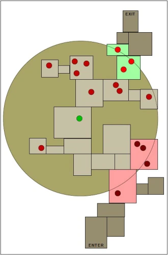
图 4-5-4 生成游荡者

Valve通过使用结构化不可预测性来生成各种各样的被感染者和物资。它既不是纯粹随机的生成被感染者，也不是均匀的。结构化不可预测性生成的结构如下：
- （1）Wanderers
即游荡者。高频率。a游荡者是指那些在发呆中四处游荡的CI，直到被一个生还者激怒。
- （2）Mobs
即暴徒（尸潮）。中等频率。这是一大群（20~30个）愤怒的普通感染者，定期冲向生还者的所在地以发起攻击。
- （3）Special Infected
即特殊感染者。中等频率。这些感染者具备特殊能力，可以对生还者团队进行骚扰。
- （4）Bosses
低频率。这些感染者很强大，可以迫使生还者团队改变他们的策略，例如Tank。我们称之为首领。
- （5）Weapon Caches
低频率。这是一组更强大的武器。
- （6）Scavenge Item
中等频率。包括土制炸弹、燃烧瓶、止痛药和额外的手枪。
- 3.生成
下面是结构化不可预测性生成结构的过程。所有的感染者只会在AAS内生成。
- （1）生成游荡者
- •为每个导航区域存储一个计数（N）。计数在地图（重新）开始时根据逃生路线距离和所需密度随机确定。
- •当一个区域进入AAS范围时：创建N个感染者。
- •当一个区域离开AAS范围，或者当正在等待生成的暴徒需要更多的成员时：此区域内的游荡者会被删除，并且N也增加相应的数目。
- •当任意一个区域被生还者看到时，或者导演处于Relax模式时，游荡者计数（N）归零。
例如：如图，绿色区域正在进入AAS范围，游荡者开始生成；红色区域正在离开AAS范围，其中的感染者将取消生成。

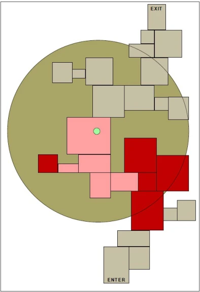

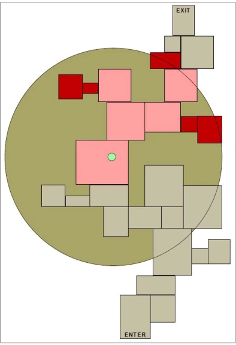

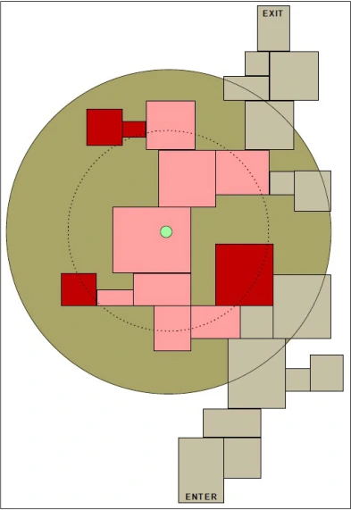
- （2）生成暴徒（尸潮）
- •暴徒每隔一段时间生成一次或多次。时间间隔是随机的，主要由游戏难度决定（例如普通难度下时间间隔为90~180 s）。
- •Boomer的胆汁会强制生成暴徒，并重置随机时间间隔。
- •
暴徒的规模从生成后的最小值开始增长到持续时间的最大值，以平衡连续、频繁生成的暴徒的难度。
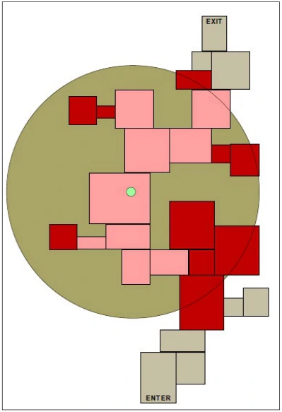
图 4-5-8 任何地方 - （3）生成特殊感染者

特感使用独立的随机时间间隔生成。它们在AAS中生还者团队所看不到的有效导航区域内生成，并且将根据特感的类型来决定生成位置。例如，因为Boomer的体型较大，移动速度较慢，不好追赶生还者，因此Boomer会试图在生还者团队前方生成；而Smoker将会试图在生还者团队的上方生成。
- （4）生成方位
生成方位决定了所有感染者更倾向于在哪里生成。
- a在生还者后方（Behind Survivors）
仅选择 AAS 中等于或落后于生还者团队路线距离的有效区域。
75%的Mob来自后面，因为游荡者和特殊/Boss感染者通常在团队之前交战。
- b在生还者前方（Ahead of Survivors）
仅选择 AAS 中等于或大于生还者团队路线距离的有效区域。
- c靠近受到Boomer呕吐的受害者（Near Boomer Vomit Victim）
只选择AAS中靠近Boomer呕吐受害者路线距离（一个确定的范围）的有效区域。
- d任何地方（Anywhere）
选择AAS中任何有效的地方生成。如果更具体的集合中没有有效区域，则使用默认设置。你可以认为是其他所有生成方式的总和。
当然，求生之路2还有更多的生成方位。通过导演脚本，你可以决定导演要如何生成丧尸群，包括但不限于以上内容。
- （5）
生成首领
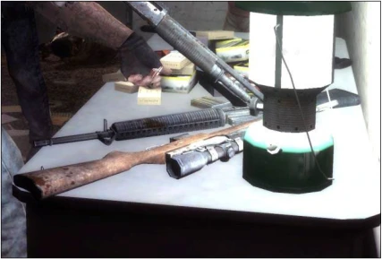
图 4-5-9 武器 - •在地图重新启动时（例如团灭重开），每隔N个单位沿着「逃生路线」放置一个Boss，并在此位置加上或减去一个随机数量。
- •三个BOSS事件被打乱并分配：Tank、Witch和Nothing。
- •不允许连续重复。（比如刚完成一个Tank事件后又来一个Tank事件）a

以下是一个地图中Boss事件的安排的示例：
…… → Tank → Witch → Nothing → Witch → Tank → Nothing → Witch → Tank → ……
- （6）生成武器（Weapon Caches）
地图设计师在每张地图上创建多个可能的武器藏匿点（即各类名为weapon_……_spawn的实体和weapon_spawn实体），AI导演选择哪些将实际存在。
- （7）生成Scavenge Items
地图设计师在整个地图上设计了许多可能的物品组合，AI导演选择哪些组合将实际存在。
武器和物资都由地图设计师决定生成点位，而游戏中由导演决定要在哪些点位生成武器和物资。因此在你自己制作的地图中可能会看到一个武器点位没有武器生成，而在下一个回合就有武器生成了。
4.5.2 AI导演与戏剧性游戏节奏#
AI导演用于生成戏剧性游戏节奏（dramatic game pacing），即实现自适应戏剧性节奏（Adaptive Dramatic Pacing）。
「戏剧性游戏节奏」指的是在游戏设计中，通过算法动态调整游戏节奏，以最大化「戏剧性」，即玩家的兴奋度或紧张感。这种设计灵感来源于观察《反恐精英》（Counter-Strike）等游戏。《反恐精英》的自然节奏是「尖峰式」的，安静紧张的时刻被不可预测的激烈战斗瞬间打断。持续不变的战斗会让人感到疲劳，而长时间的无活动则显得无聊。不可预测的激烈和平静的高低起伏能创造出强烈吸引力和可重复游玩的体验。即使是相同的场景，通常是相同的地图，每一轮也能带来不同而引人入胜的体验。
不过，我们需要先了解一下什么是「节奏」。
在游戏设计中，节奏是一个经常被提及的概念，但实际上是一个非常复杂的概念。它影响玩家对关卡的感知，决定了一个节奏良好的关卡与节奏不佳的关卡的区别。游戏节奏的核心要素包括：
- •移动动力（Movement Impetus）：玩家通过关卡的意愿。
- •威胁（Threat）：危险的概念。
- •紧张感（Tension）：关卡的氛围和情绪，或玩家感知到的危险。
- •节奏（Tempo）：玩家当前实际经历的行动水平。
通过调整这些要素，设计师可以创造出既有挑战性又有趣味性的游戏体验。例如，通过在玩家背后引入威胁，设定明确的目标，限制时间，或者通过狭窄的物理空间来增加玩家前进的动力。此外，通过吸引玩家注意的元素，如有趣的物品或建筑压力，也可以促使玩家移动，并在达到目标时产生停顿，从而影响游戏节奏。
在桌面游戏设计中，节奏通常由游戏的复杂性和结构以及预期的游戏长度驱动。随着游戏复杂性和长度的增加，实施节奏的机会也会增加。游戏节奏的价值在于它能够在游戏体验中建立焦点和动机，使下一回合感觉比上一回合更重要。游戏节奏可以帮助为米哈伊·契克森米哈伊的心理流动理论奠定基础。流动理论是指一个人完全沉浸在某项活动中的心理状态。通过设计一个能够鼓励越来越多的兴趣、专注和动机的游戏，节奏是创造我们一直试图创造的沉浸感的许多机会之一。


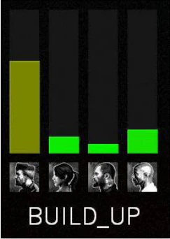

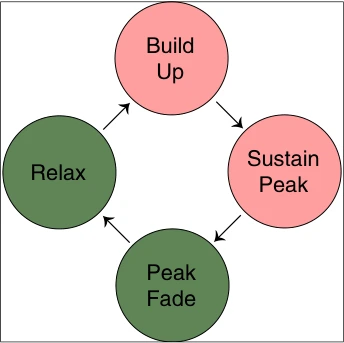
- 1.自适应戏剧性节奏算法
「自适应戏剧性节奏」算法（Adaptive Dramatic Pacing algorithm）是一种设计用来在游戏中创造类似于《反恐精英》成功节奏的高低起伏的算法。具体算法如下：
- •估计每个幸存者的「情感强度」
- •跟踪所有4个幸存者的最大强度
- •如果强度过高，暂时移除主要威胁
- •否则，创造一个有趣的威胁群体
- •这是「AI导演」系统的另一个关键组成部分
- 2.情感强度
估计每个幸存者的「情感强度」（emotional intensity）：
- •将幸存者的强度表示为一个值
- •增加幸存者的强度：
- 1.当幸存者被感染者伤害时，根据受到的伤害成比例增加
- 2.当玩家变得无法行动时a
- 3.当玩家被感染者从边缘拉/推下去时
- 4.当附近的感染者死亡时，与距离成反比
- 1.
- •随着时间的推移，幸存者的强度逐渐衰减至零
- •如果有感染者正在积极与幸存者交战，则不要让幸存者的强度衰减
这里的「情感强度」可能是通过游戏内的一系列事件来动态计算的，例如玩家受到的伤害、玩家的行动能力状态、以及玩家与感染者的距离等。这个指标可以用来调整游戏的难度和节奏，确保玩家始终处于紧张而兴奋的状态。
例如，如果一个玩家的情感强度值很高，游戏可能会暂时减少威胁，让玩家有机会恢复；如果情感强度值低，游戏可能会增加挑战，保持游戏的紧张感。这种方法有助于创造一个动态且富有戏剧性的游戏体验。
- 3.使用幸存者的强度来调节感染者的数量（感染者的生成节奏）
- （1）增强（Build Up）
在幸存者的强度超过高峰阈值之前，创造完整威胁群体（Full Threat Population）b。
- （2）维持高峰（Sustain Peak）
在幸存者的强度达到高峰后继续保持完整的威胁群体3-5秒。
确保最小的「增强」持续时间。
- （3）高峰衰退（Peak Fade）
切换到最小的威胁群体（「放松期」），并监控幸存者的强度，直到它衰减到高峰范围之外。
这个状态是必要的，以便当前的战斗参与可以进行，而不会用完整个放松期。高峰衰退不会允许放松期开始，直到自然的行动中断发生。
- （4）放松（Relax）
维持最小威胁群体（Minimal Threat Population）a30-45秒，或者直到幸存者向下一个安全室前进足够远的距离，然后恢复增强阶段。
在这里，「完整威胁群体」指的是游戏中的一段时间内，玩家将面临各种类型的敌人，包括普通的游荡者、大量的敌人群体，以及特殊感染者。这通常发生在游戏的「增强期」，即玩家的情感强度值上升的时期。

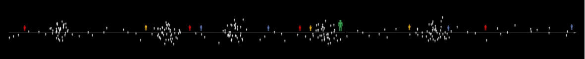

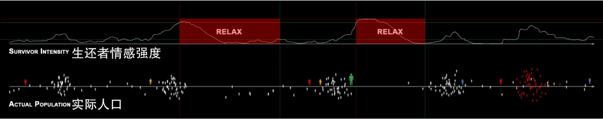
生还者情感强度实际人口

期望人口生还者强度实际人口
相反，「最小威胁群体」则是在玩家经历了一段高强度的游戏后，游戏为了让玩家放松，减少了敌人的数量，这通常发生在「放松」阶段。在这个阶段，游戏中不会出现新的游荡者和群体，也不会有新的特殊感染者出现，但是如果场上已经存在的特殊感染者，它们仍然可能会攻击玩家。
至于「首领遭遇战」，它们是游戏中的重要事件，通常设计为改变游戏节奏的方式。因此，它们不受游戏中自适应节奏算法的影响，即使玩家的情感强度很高或很低。这是因为首领遭遇战本身就是游戏设计中用来创造紧张和挑战的元素，如果缺少了这些遭遇战，游戏的整体节奏会受到太多影响，可能会降低游戏体验。
- 4.自适应戏剧性节奏如何对幸存者团队做出反应
- •生成可靠的强度高峰，而不会完全压倒团队
- •由于玩家变化和程序化威胁人口，每次游戏的高峰时机和位置都会有所不同
- •算法调整节奏，而不是难度：
- •幅度（难度）不变，频率（节奏）会变
- •
- •简单的算法可以生成引人入胜的节奏安排：
- •幸存者强度估计虽然粗略，但产生的节奏效果却很好
- •
- 5.期望人口、幸存者强度和实际人口
- •Desired Population（期望人口）：这是AI导演根据当前游戏情况预设的感染者数量。它考虑了幸存者的位置、目标和整体游戏进度，以及幸存者团队的情感强度。期望人口是AI导演试图在游戏中实现的感染者数量目标。
- •Survivor Intensity（幸存者强度）：这是一个衡量幸存者团队紧张和兴奋水平的指标。它通过玩家的行为和游戏中发生的事件来计算，如受到伤害、被感染者攻击或是救助队友等。幸存者强度的高低会影响AI导演对游戏节奏的调整。
- •Actual Population（实际人口）：这是游戏中实际存在的感染者数量。它是AI导演根据期望人口和幸存者强度动态生成的结果。实际人口可能会因为各种原因（如技术限制、游戏平衡或玩家行为）与期望人口有所不同。
- 习题11
- 一、选择题
- 1.结构化不可预测性主要通过什么技术实现？ A. 固定事件生成 B. 纯随机事件生成 C. 玩家行为分析和动态调整 D. 剧情预设
- 2.AI导演通过以下哪种方式增强游戏的可玩性？ A. 固定敌人位置 B. 自动存档点调整 C. 动态生成敌人和物资 D. 提供无限资源
- 3.在「生成游荡者」机制中，当一个导航区域离开AAS范围时，会发生什么？ A. N值减少 B. 该区域的感染者会消失 C. 增加暴徒的生成数量 D. 该区域内的物资重新生成
- 4.下列哪个不是AI导演用来生成敌人的标准？ A. 幸存者的路线距离 B. 逃生路线的长度 C. 生还者团队的情感强度 D. 游戏的画面质量
- 5.AI导演在估算幸存者情感强度时，会根据哪项因素增加强度值？ A. 玩家手持武器的种类 B. 感染者的伤害程度 C. 游戏中的地图大小 D. 玩家所在位置的视野范围
- 6.AI导演在生成物资时，会优先考虑哪个因素？ A. 地图的美观性 B. 玩家团队的当前状态 C. 游戏的背景音乐 D. 敌人的种类
- 7.AI导演根据生还者的情感强度计算生成感染者的数量时，使用的主要指标是： A. 逃生路线的长度 B. 当前幸存者的健康状况 C. 过去游戏中的死亡次数 D. 当前生还者的位置和行为
- 8.在AI导演的系统中，当生还者与感染者的距离过近时，可能会触发以下哪种效果？ A. 自动减速 B. 增加敌人生成速度 C. 减少物资生成数量 D. 立即结束游戏
- 9.下列哪个因素不会影响AI导演生成敌人的决策？ A. 玩家选择的武器类型B. 角色的游戏经验 C. 玩家团队的组合 D. 玩家当前的情感状态
- 10.AI导演在生成感染者时，常用的算法是： A. 线性回归 B. 随机森林 C. 基于规则的系统 D. 神经网络
- 11.AI导演在游戏中维持的主要目标是什么？ A. 提供完全随机的敌人生成 B. 让玩家体验重复的游戏情节 C. 维护游戏的紧张感和挑战性 D. 增加游戏的画面效果
- 12.在AI导演的设计中，哪项技术用于分析玩家的行为模式？ A. 数据挖掘 B. 网络爬虫 C. 文本分析 D. 图像识别
- 13.AI导演如何评估玩家团队的合作效率？ A. 通过监测玩家的对话 B. 分析玩家之间的距离和互动 C. 根据玩家选择的武器 D. 观察游戏的时间消耗
- 14.AI导演生成敌人的策略中，以下哪种方式是最常用的？ A. 按固定时间间隔生成 B. 随机选择敌人种类 C. 基于玩家情感强度和行为动态生成 D. 根据游戏进程线性生成
- 15.AI导演会根据玩家团队的情感强度来调整生成感染者的数量，这种情感强度主要基于以下哪个因素？ A. 玩家在游戏中的时间 B. 幸存者遭受的伤害程度和逃生状况 C. 玩家选择的角色 D. 游戏中物资的数量
- 二、填空题
- 16.路线距离是指从起始安全室到导航网格中每个区域的 _________。
- 17.AI导演的「增强期」是指幸存者的 _________ 达到高峰前创造完整威胁群体的阶段。
- 18.潜在可见区域（PVA）是指能够被 _________ 的所有导航区域集合。
- 19.AI导演在生成Boome r时，会更倾向于将其生成在生还者团队的 _________。
- 20.在AI导演系统中，当玩家的情感强度值过高时，系统会暂时移除 _________。
- 三、简答题
- 21.简述结构化不可预测性如何提高游戏的可玩性。
- 22.什么是激活区域集（AAS），它在AI导演中起到什么作用？
- 23.AI导演如何通过「自适应戏剧性节奏」算法调整游戏节奏？
- 四、论述题
- 24.结合「结构化不可预测性」与「自适应戏剧性节奏」，论述AI导演在《求生之路》中如何通过动态调整游戏内容来提供丰富的游戏体验。
4.6 导航网格属性列表#
本节列出了求生之路系列中可用的导航属性。导航属性分为两种，一种称为生成属性（spawn attribute，又称为terror attribute)，另一种称为基本属性（base attribute）。部分导航属性由游戏自动添加。
4.6.1 生成属性#
生成属性只能通过z_debug 1命令来可视化。每个生成属性都有唯一的颜色标识，填充于应用了该生成属性的导航区域的内部。
当多个生成属性被应用于同一个导航区域时，颜色不会混合，一个总是会覆盖另一个。
生成属性主要用于控制各种感染者的生成。
| 名称 | 描述 |
|---|---|
| BATTLEFIELD | 已计划的渐强事件(Crescendo Event)将发生的区域。除对抗模式外，当生还者进入标有此属性的导航区域时，所有感染者的生成都将停止，直到生还者离开这些导航区域。一旦恐慌事件开始，所有感染者 AI 只会在 BATTLEFIELD 属性指定的区域生成，这意味着如果幸存者设法走出这些区域，感染者的生成就会停止。 应该应用于地图中的大面积区域：能够在其中包含许多感染者的友好生成区域，以及一个 标记了BATTLESTATION 属性的区域。如果游戏区域有生还者可以向前逃离的方法，或者游戏环境不断变化［如：冲刺事件a（Gauntlet Event）］，则不应使用此属性。 |
| BATTLESTATION | 向幸存者 AI 指示恐慌事件的强大防御区域，通常在补给/武器旁边。幸存者机器人可能会在恐慌事件之前/期间漫游然后驻留在这些导航区域，当它们认为不安全时放弃它（例如，离任何人类玩家太远）。仅适用于已经包含 BATTLEFIELD 或 FINALE 属性的导航区域。 在求生之路2中，此属性无效果，除非启用了 sb_allow_leading 或 allow_all_bot_survivor_team 的命令。 |
| CHECKPOINT | 指定地图的起始/过渡区域（检查点）（即安全室）。当一个幸存者离开这个区域时，回合开始，以所有且只有生还者站在这些应用了此导航属性的导航区域上b，并把安全室的门关上，回合便结束。 此导航属性禁止玩家控制的SI生成，即玩家控制的特感无法在应用了此导航属性的导航区域上重生。 |
| EMPTY | 禁止仅游荡的CI生成。有助于防止普通感染者在它们不起作用的地方生成，通常在幸存者的可玩区域之外（例如建筑屋顶）。 |
| FINALE | 表示终局区域（救援区域）。其他特征类似于BATTLEFIELD属性。你需要应用此属性于你的终局区域（即在终局开始后生还者能活动的所有区域）上的导航区域，并在其中应用BATTLESTATION属性给一个导航区域。 |
| LYINGDOWN | 当CI未被惊醒时，让CI做出躺下休息的行为。 |
| 续表 | |
| 名称 | 描述 |
| NOT_CLEARABLE | 防止某个导航区域被幸存者标记为「已清除」，否则将禁止非玩家感染者生成。 通常情况下，一旦幸存者看到一个导航区域，它就会被「清除」，并移除所有生成的感染者。（也就是说，没有标记这个属性的导航区域被生还者扫荡过后就不会再生成感染者了） 通常应用于在最外围的区域感染者可以发现幸存者，有可攻击的视线，但生还者不能真正看到（例如通过雾遮挡）。 |
| NO_MOBS | 禁止暴徒（mob）生成，包括玩家控制的Tank、被激怒的感染者等，也禁止SI在BATTLEFIELD区域上生成。 |
| NOTHREAT | 禁止 THREAT 属性执行任何操作，如果它应用于同一导航区域。 |
| OBSCURED | 一个非常强大的导航属性；即使在幸存者的视线范围内，也允许感染者生成。用于视觉模糊但导演未考虑的导航区域。例如：树。幸存者机器人对这些导航区域的视线被阻挡，以防止全知全能的行为。 导演仍然可以在没有OBSCURED属性的情况下创建有效的丧尸，但与没有的情况相比，通常会离幸存者的 PVS a更远。 注意：道具禁用碰撞总是无法阻挡视线。 |
| RESCUE_VEHICLE | 禁用导航区域，直到触发 info_director 输入「FinaleEscapeVehicleReadyForS urvivors」，然后使用此属性的导航区域将被取消禁用。 在求生之路2中中，VScript函数NavMesh.UnblockRescueVehicleNav() 也可用于解锁RESCUE_VEHICLE 属性。 |
| STOP_SCAN | 感染者 AI 不会通过这个导航。如果 STOP_SCAN 属性占据了一个路径入口，如果所有幸存者都通过它，感染者将在入口之外生成。 警告：如果所有生还者都占在这里，将没有感染者生成！ |
自动添加的生成属性
此处的生成属性由游戏自动添加，通常不需要以任何方式手动标记。
| 名称 | 描述 |
|---|---|
| DOOR | 说明这些导航区域上存在一个可交互的门。 生还者 AI 将监视此导航区域的可交互门，而感染者 AI 可能会在门关闭时考虑路径替代方案。还可以阻止 RESCUE_CLOSET 属性的传播。如果未锁定，则由 prop_door_rotating 自动分配。 当门被摧毁时，该属性将自身重命名为 DESTROYED_DOOR 名称。 |
| ESCAPE_ROUTE | 标有此属性的导航区域是通过将生成点/检查点链接到结束检查点/结局的地图从开始到结束的基本指南路径。这条路径有助于游戏/AI 根据路线和关卡进展做出正确的决定。 这应该保持不变，由nav_analyze会话处理。 |
| PLAYER_START | 与 CHECKPOINT 功能近似，但不使 Spitter 酸池的扩散/缩小或暂停丧尸群/特殊感染者的生成。由 info_player_start 在地图加载时分配。 注意：如果用在起始的安全室，已亡生存者在之前的章节复活时将恢复 100% 生命值，而不是 50% 生命值。 |
| RESCUE_CLOSET | 一个救援壁橱房间，波及 DOOR 属性所包含的属性。游荡者不得进入。在 nav_analyze 会话期间自动分配。 |
| 续表 | |
| 名称 | 描述 |
| THREAT | 作为终极感染者 AI (Tank 和 Witch) 的生成建议区域。只有沿着 ESCAPE_ROUTE 路径的导航区域是 THREAT 属性的候选区域。如果幸存者已经到达最近的逃生路线，THREAT 将被删除。 要求 nav_analyze 在随机区域自动标记。 |
4.6.2 基本属性#
与生成属性不同，这些属性不会用颜色填充导航区域。相反，它们可能具有由线条制成的自己可识别的图案/形状，并且可以彼此模拟地出现。
将鼠标悬停在一个导航区域上时，有关该导航区域的信息会显示一小段时间，其中包括该导航区域应用了哪些基本属性。
基本属性主要用于控制NPC的移动行为。下表中没有备注说明「不会自动添加」的基本导航属性，都是由游戏自动添加。
- 1.有效的基本属性
| 名称 | 描述 |
|---|---|
| PRECISE （不会自动添加） | 禁用「避障」(Obstacle Avoidance)行为，机器人不再与附近的角色或世界几何体 / prop_static 实体保持距离。可以使用 nb_debug PATH 命令（绿色长方体）进行可视化。 将此属性放置在狭窄的导航区域，以便机器人在避障 (Obstacle Avoidance) 开始时不会离边缘太近。 此属性适用于靠近所述「障碍物」的狭窄区域，因此机器人不会做出不明智的决定，例如远离障碍物后掉下去。 |
| BLOCKED_ZOMBIE | 说明这些导航区域对于感染者而言是被阻挡的。 类似于 STOP_SCAN 属性，但是进入此导航区域的「所有」玩家（幸存者和特殊感染者）和 NPC（普通感染者和女巫）不会更新他们的「最后已知的导航区域」a。不能手动应用；需要 func_nav_blocker 实体，其中 teamToBlock 设置为 3。 |
| BLOCKED_SURVIVOR | 说明这些导航区域对于生还者而言是被阻挡的。 类似于 BLOCKED_ZOMBIE 属性，但会阻止生还者机器人导航。在生还者上的 Jockey 会躲开拥有此属性的导航区域。无法手动应用，需要 PLAYERCLIP 属性或 script_nav_blocker 实体，teamToBlock 设置为 2。 警告：感染者有时候会在此生成，他们会认为他们没有位于任何导航区域上！ |
| BREAKABLEWALL | 说明这些导航区域上存在易碎墙。 感染者 AI 不喜欢通过这个导航属性，除了 Smoker。由 prop_wall_breakable 在地图加载时分配。 |
| DAMAGING | 说明这些导航区域存在危险。 所有AI不喜欢通过这些导航区域，除了在幸存者上的 Jockey。无法手动应用，只有像 witch 或 trigger_hurt 这样的实体才能将其应用于导航区域。 |
| 续表 | |
| 名称 | 描述 |
| MOB_ONLY | 说明这些导航区域只能由暴徒通过。 导航路线也不会通过使用此属性的导航区域进行计算。 这不能手动设置！只能由实体设置，例如 func_breakable 的 Breakable by 的All Infected属性，或func_nav_attribute_region实体。 警告：此属性不会在回合重新启动时持续存在！ |
| NO_MERGE | 禁止此导航区域与其他区域合并。 仅在导航区域生成期间可用，不合并具有JUMP属性或OBSTACLE_TOP属性的区域。可以手动应用，但不可见。 |
| OBSTRUCTED | 说明这些导航区域上存在障碍物。 幸存者 AI 不喜欢通过这些导航区域。无法手动应用，只有像 prop_physics 或 func_nav_avoidance_obstacle 这样的实体能够将其应用于导航区域。 |
| PLAYERCLIP | 说明这些导航区域上存在阻挡生还者的空气墙。 当与具有 Player clip 纹理的固体相交时应用。阻止路线(Flow)，但也为它自己的路线设置为-9999。自动添加BLOCKED_SURVIVOR属性。 |
| STAIRS | 将迎面而来的区域视为平坦的地面（以让AI直接走台阶），因此机器人也不会考虑跳到高地，但仍会跳过间隙。还禁止普通感染者攀爬。 |
| TANK_ONLY | 说明这些导航区域只能由Tank通过。 导航路线也不会通过使用此属性的导航区域进行计算。 这不能手动设置！只能由实体设置，例如 prop_dynamic 的 Breakable by 的Tank only属性，或script_nav_attribute_region实体。 警告：此属性不会在回合重新启动时持续存在！ |
- 2.过时的基本属性
来自《反恐精英：起源》的废弃/弃用的剩余属性。这些属性要么没有实际功能，要么被现有属性取代。但是还是可以应用的。
| 名称 | 描述 | 《反恐精英：起源》的附录 |
|---|---|---|
| AVOID | 使机器人躲开这些导航区域。 在求生之路2中，只有 Jockey 会躲开此导航属性。在求生之路1中没有效果。 | 使所有 AI 不喜欢这个网格，有时在跳跃前必要时会完全避开它。 |
| CLIFF | 用来说明这些导航区域附近是悬崖。会触发挂边。 废弃的属性。目前由导航生成系统使用，以表明其在生成导航区域时很精细。 注意：目前，求生之路2系统会自动判定是否启用挂边，不需要依赖此属性。 | 与这里相同。 |
| CROUCH | 使AI蹲下。 在求生之路2中，阻止该导航区域除 Smoker 之外的所有特殊感染者，以及特殊感染者的生成。求生之路1中没有可见效果。由 nav_analyze 会话自动添加。 注意：所有的AI都可以自动根据实际情况蹲伏，不需要依赖此属性。 | 使 AI 蹲下。 |
| 续表 | ||
| 名称 | 描述 | 《反恐精英：起源》的附录 |
| DONT_HIDE | 在 nav_analyze 会话中，不会为此导航区域生成隐藏点标记（紫色线），从而减少最终文件的尺寸。未被任何 AI 使用。在 nav_analyze 会话中，会跳过此导航区域的隐藏点标记（绿色和紫色线）生成。未被任何机器人使用。 可以用于压缩导航文件的大小。 | 相同，但隐藏标记未被使用。 |
| JUMP | 强制AI在进入这些导航区域时跳跃。 特殊感染者永远不会生成于此。 在求生之路系列中，所有机器人已经根据导航连接自动跳跃/攀爬。 | 强制 AI 在进入此导航区域时跳跃。 |
| NO_HOSTAGES | 在求生之路中无作用。 | 携带人质时，请勿通过此导航。 |
| NO_JUMP | 禁止跳跃。 在导航区域上绘制一个红色菱形。 | 防止尝试跳跃。 |
| RUN | 使机器人保持跑步速度，不要减速。 标记导航区域的中心有一对蓝色箭头。 | 保持跑步速度，不要减速。 |
| OBSTACLE_TOP | 说明这些导航区域在道具实体上方。 在道具实体上方创建导航区域时自动添加。 注意：与 func_nav_avoidance_obstacle 实体无关。 | 一致。 |
| STOP | 标记导航区域的中心被赋予一个红色八边形。 | 进入此导航区域时立定一秒钟。 |
| STAND | 使机器人站立。 在求生之路中无效果。 | 不考虑蹲伏。 |
| TRANSIENT | 将导航区域轮廓变成虚线。 | 如果nav_edit未启用，每 2 秒查看此导航区域现在是否被某些东西阻挡。 |
| WALK | 使机器人保持前进。 标记导航区域的中心有一个单一的绿色箭头。 | 机器人按住 +walk 键。 |
| UNDERWATER | 说明这些导航区域位于水底下。 导航区域被赋予一个蓝色的正方形/矩形，它位于导航区域的轮廓附近。创建导航区域并接触水内部时自动添加。 | 从高处坠落到这个导航区域是安全的。 |
4.6.3 比特值#
比特值是导航属性的一种标识符，可以通过比特值来应用导航属性（用于VScript）。
| 基本属性 | 生成属性 | ||
| 名称 | 比特值 | 名称 | 比特值 |
| CROUCH | 1 << a0 (1) | () | 1 << 0 (1) |
| JUMP | 1 << 1 (2) | EMPTY | 1 << 1 (2) |
| PRECISE | 1 << 2 (4) | STOP_SCAN | 1 << 2 (4) |
| NO_JUMP | 1 << 3 (8) | (无名称) | 1 << 3 (8) |
| STOP | 1 << 4 (16) | (无名称) | 1 << 4 (16) |
| RUN | 1 << 5 (32) | BATTLESTATION | 1 << 5 (32) |
| WALK | 1 << 6 (64) | FINALE | 1 << 6 (64) |
| AVOID | 1 << 7 (128) | PLAYER_START | 1 << 7 (128) |
| TRANSIENT | 1 << 8 (256) | BATTLEFIELD | 1 << 8 (256) |
| DONT_HIDE | 1 << 9 (512) | IGNORE_VISIBILITY | 1 << 9 (512) |
| STAND | 1 << 10 (1024) | NOT_CLEARABLE | 1 << 10 (1024) |
| NO_HOSTAGES | 1 << 11 (2048) | CHECKPOINT | 1 << 11 (2048) |
| STAIRS | 1 << 12 (4096) | OBSCURED | 1 << 12 (4096) |
| NO_MERGE | 1 << 13 (8192) | NO_MOBS | 1 << 13 (8192) |
| OBSTACLE_TOP | 1 << 14 (16384) | THREAT | 1 << 14 (16384) |
| CLIFF | 1 << 15 (32768) | RESCUE_VEHICLE | 1 << 15 (32768) |
| TANK_ONLY | 1 << 16 (65536) | RESCUE_CLOSET | 1 << 16 (65536) |
| MOB_ONLY | 1 << 17 (131072) | ESCAPE_ROUTE | 1 << 17 (131072) |
| PLAYERCLIP | 1 << 18 (262144) | DOOR或 DESTROYED_DOOR | 1 << 18 (262144) |
| BREAKABLEWALL | 1 << 19 (524288) | NOTHREAT | 1 << 19 (524288) |
| NAV_MESH_FLOW_BLOCKED* | 1 << 27 (134217728) | LYINGDOWN | 1 << 20 (1048576) |
| NAV_MESH_OUTSIDE_WORLD* | 1 << 28 (268435456) | COMPASS_NORTH* | 1 << 24 (16777216) |
| NAV_MESH_MOSTLY_FLAT | 1 << 29 (536870912) | COMPASS_NORTHEAST* | 1 << 25 (33554432) |
| NAV_MESH_HAS_ELEVATOR | 1 << 30 (1073741824) | COMPASS_EAST* | 1 << 26 (67108864) |
| NAV_MESH_NAV_BLOCKER | 1 << 31 (-2147483648) | COMPASS_EASTSOUTH* | 1 << 27 (134217728) |
| COMPASS_SOUTH* | 1 << 28 (268435456) | ||
| COMPASS_SOUTHWEST* | 1 << 29 (536870912) | ||
| COMPASS_WEST* | 1 << 30 (1073741824) | ||
| COMPASS_WESTNORTH* | 1 << 31 (-2147483648) | ||
习题12#
- 一、选择题
- 1.下列关于 BATTLEFIELD 属性的描述，哪一项是正确的？ A. 允许感染者生成但不允许生还者进入 B. 应用在地图的起始区域，用于触发检查点 C. 除对抗模式外，生还者进入时停止感染者生成 D. 不应用于冲刺事件的地图区域
- 2.BATTLESTATION 属性在《求生之路2》中是否有效？ A. 始终有效 B. 仅在启用 sb_allow_leading 或 allow_all_bot_survivor_team 时有效 C. 仅在特殊感染者生成时有效 D. 从未有效
- 3.CHECKPOINT 属性的作用是什么？ A. 允许特殊感染者在安全室生成 B. 标记终局事件发生的区域 C. 指定安全室并禁止玩家控制的感染者生成 D. 标记救援交通工具的路径
- 4.OBSCURED 属性主要用于什么情景？ A. 用来阻止暴徒生成 B. 用来标记无法被生还者看见的导航区域 C. 即使在生还者的视线范围内，也允许感染者生成 D. 用来标记安全室区域
- 5.RESCUE_VEHICLE 属性何时会被启用？ A. 当生还者进入终局区域时 B. 当游戏中触发了 FinaleEscapeVehicleReadyForSurvivors 指令时 C. 当所有生还者被感染者抓住时 D. 游戏开局时
- 6.下列哪个导航属性会使游荡的普通感染者无法在特定区域生成？ A. EMPTY B. NO_MOBS C. OBSCURED D. BLOCKED_ZOMBIE
- 7.以下哪种属性专门用于控制终局区域的感染者生成行为？ A. FINALE B. BATTLEFIELD C. RESCUE_VEHICLE D. ESCAPE_ROUTE
- 8.如果想让感染者在已经被生还者发现的导航区域上生成，应该使用哪种属性？ A. NO_MOBS B. NOT_CLEARABLE C. EMPTY D. LYINGDOWN
- 9.哪个属性可以在幸存者视线被遮挡的区域内生成感染者，即使该区域在幸存者的视野中？ A. OBSCURED B. NO_MOBS C. STOP_SCAN D. CHECKPOINT
- 二、填空题
- 10.LYINGDOWN 属性会让普通感染者在未被惊醒时做出______的行为。
- 11.STOP_SCAN 属性会阻止感染者通过该导航区域，当所有生还者通过该区域时，感染者将在该入口的______生成。
- 12.BLOCKED_SURVIVOR 属性会阻止______进入该导航区域，并阻止他们更新最后已知的导航位置。
- 13.OBSTRUCTED 属性表示该导航区域存在______，幸存者AI不喜欢通过这些区域。
- 14.NO_MERGE 属性的主要作用是禁止导航区域与其他区域______。
- 三、简答题
- 15.简述 FINALE 属性与 BATTLEFIELD 属性的异同。
- 16.如何使用 RESCUE_CLOSET 属性？该属性是否需要手动设置？
- 17.为什么不建议在冲刺事件中使用 BATTLEFIELD 属性？
- 18.CHECKPOINT 属性如何影响特殊感染者的生成？
- 19.解释 THREAT 属性在导航网格中的作用。
- 四、论述题
- 20.论述 OBSCURED 属性对游戏体验的影响，以及在地图设计中如何合理使用该属性。
第5章 求生之路2地图制作基础教程#


原书脚注
- 原书第 66 页 a选定集，即由被选中的导航区域所组成的集合。
- 原书第 66 页 b下文中将简称为VDC（即Valve Developer Community的缩写）。
- 原书第 67 页 a 即撇号，通常来说在键盘上分号「；」的旁边。
- 原书第 69 页 a如果使用nav_mode.cfg，则可以按下数字5来标记。
- 原书第 74 页 a 导航区域通常是一个矩形。无论导航区域是否贴合到地面，其俯视图总是一个矩形，即其二维投影是矩形。
- 原书第 81 页 a资料来源于VDC。
- 原书第 81 页 b有JUMP基本属性的导航网格。
- 原书第 81 页 c进入导航网格编辑器时出现在准星的十字光标。
- 原书第 82 页 a即「当选中了2个以上的导航网格时」。
- 原书第 83 页 a格式为「x, y, z」。
- 原书第 83 页 b例如maps/map1_selected_1000.txt。
- 原书第 84 页 a即Flood Fill（可能是有关泛洪填充算法）。
- 原书第 87 页 a 此内容面向高级地图制作者，初学者可跳过此节。
- 原书第 87 页 b 即《胜利之日》（Day of Defeat）。
- 原书第 88 页 a 指会大量生成。频率越高，生成得越多，反之则越少。
- 原书第 90 页 a 需要注意的是，这里是由导演自己生成的，而不是地图作者通过一些其他手段重复生成Tank。
- 原书第 92 页 a 即「倒地」。
- 原书第 92 页 b 包括游荡者、暴徒和特殊感染者。
- 原书第 93 页 a 在生还者队伍「平静」之前都不会出现游荡者，禁止新的暴徒和特殊感染者生成（尽管现有的特殊感染者会发起攻击）。
- 原书第 96 页 a 指当触发了恐慌事件后，需要生还者顶着丧尸群一路杀向目的地的事件。
- 原书第 96 页 b 即在标有CHECKPOINT的导航区域上，所有的生还者都必须站在这些导航区域上并且只有生还者站在这些导航区域上。例如，如果只有生还者站在这些区域上，但还有其他生还者没有在这些导航区域上，或者所有的生还者都在这些导航区域上，但有感染者在这些导航区域上，都不符合要求。
- 原书第 97 页 a PVS：指Potentially Visible Set（潜在可见集）。有关详细信息，请参阅第 133 页上的「6.4.1 潜在可见集」。通常PVS指的是潜在可见集。
- 原书第 98 页 a 通过VScript函数GetLastKnownArea()可以返回一个机器人的最后已知导航区域。
- 原书第 100 页 a 在Hammer物体属性对话框中的Flag标签页列出了实体的所有可用标志。此部分仅在编辑实体的属性时可用。标志（flag）允许你切换实体的特定功能。如果选择了多个实体，则一些标志复选框可能会显示为灰色。这表示该标志仅在部分选定的实体上启用。
- 原书第 101 页 a 这是左移运算符。左移运算符是一个计算机用语。用来将一个数的各二进制位全部左移若干位，移动的位数由右操作数指定，右操作数必须是非负值，其右边空出的位用0填补，高位左移溢出则舍弃该高位。在这里，由于被操作数都是1，所以可以认为这里的比特值是以操作数为指数，底数为2的幂。比如1<<0=20=1,1<<15=215=32768。